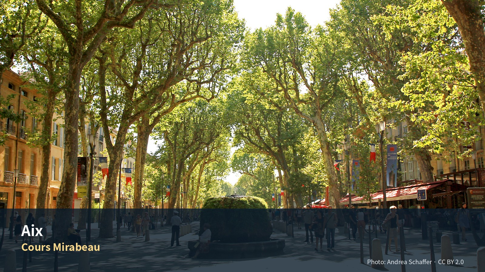

전체 목차
- 엑상프로방스 4박 5일
- 세잔의 도시, 시장생활과 카시스의 바다
- 지역소개
- Editor’s Verdict
- 이 4박이 여행 전체에서 하는 일
- 이 도시를 이해하는 축
- 엑상을 이해하는 다섯 가지 열쇠
- 편집자 큐레이션 — 엑상과 카시스에 집중하고 Marseille를 대안으로 읽기
- 일정
- 한눈에 보는 실행 요약
- 날짜별 확정 일정
- Day 12 · 9월 9일 수
- Day 13 · 9월 10일 목
- Day 14 · 9월 11일 금
- Day 15 · 9월 12일 토
- Day 16 · 9월 13일 일
- 피로도와 하루 활동량
- Day 23 렌터카 인수 P0 연결
- Pass B. 일자별 실행성 감사
- 여행정보
- 놓치면 아쉬운 선택
- 하루를 완성하는 네 가지 선택
- 이 지역의 Top 10
- 일정에 포함된 장소별 상세 가이드
- 실행지도 · 현장 사용
- 추천등급
- 주요 장소 상세 안내
- 주변지역 선택표
- 2026 행사·특별전
- 먹거리
- 먹거리 — 프로방스 요리의 문법
- 프로방스 요리를 이해하는 한 문장
- 먹어야 할 것
- 카시스에서는 다르게 먹는다
- 날짜별 배치
- 시장 장보기 — 9월
- 음식과 레스토랑
- 시장·슈퍼·빵집·장보기
- 교통
- 문전 이동과 교통 실행표
- 교통 — 이 구간의 이동 구조
- 이 구간의 성격 — 차가 생기고 시내에서는 못 쓴다
- 프랑스 도로 — 요약
- 엑상 시내 주차 — 이 구간의 실질 과제
- 카시스 주차 — Day 14의 병목
- 저배출구역 (ZFE)
- 렌터카·주차 운영
- 숙박
- 동네별 성격과 숙소 적합성
- 숙소 전략
- 실제 숙소 후보
- 예약
- 예약 우선순위
- 예약이 필요한 것 — 우선순위
- 예약카드
- 공식 확인 정보와 재확인 대상
- 경비
- 경비 — 예산 설계
- 4박 5일 구조 (2인)
- 입장료 — 확인된 값
- 절감 여지
- 여행팁
- 현장 메모
- 운동·수영·스케치
- 우천·폭염·지연·피로 대체안
- 출발 전 확인목록
- 대안 루트 — 이번 일정에서 배제한 경로
- 우선순위
- Jas de Bouffan 1순위
- Marseille — MuCEM 2순위
- Carrières de Bibémus
- Montagne Sainte-Victoire 산기슭
- Vence — 로사리오 예배당
- Salon-de-Provence · Arles
- 후반부와 연결되는 것 — 파리 오르세
- 부록
- Phase 10 공식정보 원칙
- 공식자료와 검증 범위
- 최종 편집 판단
- 검증 상태 — 보강본 근거
- 검증 상태
엑상프로방스 4박 5일
세잔의 도시, 시장생활과 카시스의 바다
여행의 역할: Nice 5박 뒤 프로방스 내륙의 생활 리듬으로 전환하는 4박 거점이다. 엑상은 시장·분수·대학·법원·카페가 압축된 걷기 좋은 생활도시다. 기본안은 엑상과 세잔, 카시스 해안에 집중한다. Marseille는 Cassis의 기상·운항이 나쁠 때 교체하는 도시형 대체일로 남긴다.
여행자 기준: Julia의 수영은 선택 일정이며 숙소 선정조건으로 사용하지 않는다. 아침은 숙소, 점심은 샌드위치·시장·가벼운 현지식, 저녁은 레스토랑을 기본으로 한다. Jason의 스케치 2시간과 Julia의 선택 수영을 9월 12일 같은 시간 블록에 배치한다.
이전 챕터와의 연결: 9월 9일 니스공항에서 렌터카를 인수해 Saint-Paul-de-Vence와 Grasse를 거쳐 엑상에 도착한다. Day 1은 관광일이 아니라 운전 종료·주차·체크인·생활권 확보일이다.
지역소개

시장·분수·세잔의 도시와 Cassis의 바다를 4박에 압축한 Provence 입문
도시생활의 리듬과 세잔의 시선을 먼저 익힌 뒤 Luberon으로 들어가는 연결 장
Editor’s Verdict
| 항목 | 평가 |
|---|---|
| 여행 적합도 | ★★★★★ Jason·Julia의 생활형 여행에 최적화 |
| 예산 체감 | 중상 |
| 일정 강도 | 보통, Cassis day만 높음 |
| 예약 핵심 | 숙소주차·Atelier·Calanques 확인 |
| 우천 전환 | Musée Granet 확대, Marseille/Mucem 대체 |
이 4박이 여행 전체에서 하는 일
첫 내륙 구간이다. Barcelona부터 Nice까지 11일이 전부 해안이었다. 엑상은 바다에서 30km 안쪽이고, 여기서부터 Lyon까지 15일이 내륙이다.
동시에 한 사람의 생애를 따라가는 유일한 구간이다. 세잔은 이 도시에서 태어나 이 도시에서 죽었고, 파리에 오래 있었지만 결국 돌아왔다. Day 13에 그가 어린 시절 살던 집 앞을 지나고, Day 15에 그가 마지막 4년을 보낸 작업실에 간다.
그리고 2026년은 세잔 사후 120주년이다. 평소 닫혀 있던 자스 드 부팡과 로브 아틀리에가 7월 4일–10월 31일에만 열린다. 이 여행의 날짜가 그 안에 들어간다. 우연이지만 활용하지 않을 이유가 없다.
이 도시를 이해하는 축
관광도시가 아니라 행정·대학·시장 도시다
엑상은 프로방스 백작령의 옛 수도였고 지금도 법원과 대학이 있다. 학생과 공무원이 사는 도시다.
실감하는 방법은 간단하다. 화·목·토 오전 시장에 가 보면 된다. 관광객용 기념품이 아니라 채소와 생선과 치즈를 산다. 그리고 오후 1시면 접는다. 관광 상권이라면 그 시간에 접지 않는다.
이름이 물에서 왔다
Aix는 라틴어 aquae(물)에서 왔다. 로마인이 온천 때문에 여기 정착했다.
이 도시에 분수가 많은 것이 그 결과다. 쿠르 미라보의 무쉬 분수는 지금도 18℃ 온천수가 나온다. 손을 대 보면 도시 이름의 어원이 확인된다.
쿠르 미라보는 경계이자 무대다
1649–1651년에 성벽을 헐고 낸 길이다. 북쪽이 중세 구시가지(Vieil Aix), 남쪽이 17세기 계획구역(Quartier Mazarin)이다.
한 길을 사이에 두고 두 시대가 마주 본다. 북쪽은 좁고 굽은 골목, 남쪽은 곧고 넓은 격자. 바르셀로나에서 Gòtic과 Eixample을 걸었다면 같은 대비를 훨씬 작은 규모로 다시 만난다.
세잔을 이해하려면 셋을 나눠 봐야 한다
기존 원고의 이 정리가 정확하다.
| 축 | 어디서 |
|---|---|
| 작품 | Musée Granet · 파리 오르세 |
| 작업실 | Atelier des Lauves · Jas de Bouffan |
| 풍경 | Montagne Sainte-Victoire · Bibémus |
이번 일정은 작업실과 풍경 중심이다. 작품은 상대적으로 적다. 그런데 이 여행에는 후반부가 있다 — Day 28부터 파리에 16박 한다. 아래 '대안 루트’의 오르세 항목을 참조.
엑상과 카시스를 축으로, 마르세유는 대안으로
기존 원고의 판단이다. 마르세유는 크고 복잡하고 이 여행의 리듬과 다르다. 4박에 대도시를 하나 더 넣으면 회복이 안 된다.
엑상을 이해하는 다섯 가지 열쇠
엑상은 관광도시보다 행정·대학·시장도시에 가깝다
도시의 핵심은 거대한 기념물 하나가 아니라 작은 광장과 분수, 법원·대학·시장·카페가 반복되는 보행구조다. Cours Mirabeau 남쪽의 Mazarin은 17세기 귀족 확장지구이고, 북쪽의 구시가지는 중세 골목과 시장이 밀집한다. 두 구역을 함께 걸어야 도시가 보인다.
Cours Mirabeau는 경계이자 무대다
북쪽: Vieil Aix — 시장·성당·시청·상점
↓
Cours Mirabeau — 분수·카페·도시 산책축
↓
남쪽: Quartier Mazarin — 귀족저택·Granet·조용한 골목
숙소는 이 축 한가운데보다 서쪽 Rotonde·Sextius 주변이 차량과 생활에 더 유리하다.
세잔을 이해하려면 작품·작업실·풍경을 나눠 봐야 한다
- Musée Granet: 작품과 미술사
- Atelier des Lauves: 작업도구와 말년의 일상
- Terrain des Peintres·Sainte-Victoire: 반복해서 바라본 풍경
- Jas de Bouffan: 가족의 저택과 초기 작업
- Bibémus: 오커 채석장의 기하학적 형태
이번 4박에서는 Granet+Atelier를 기본으로 하고, Terrain des Peintres는 스케치 선택, Jas de Bouffan·Bibémus는 대체로 둔다.
프로방스 시장은 관광 이벤트가 아니라 식사의 기반이다
Richelme는 매일 아침 생활형 식품시장이고, 화·목·토에는 Cours Mirabeau와 여러 광장에 식품·직물·꽃 시장이 확장된다. Jason·Julia의 숙소 아침과 샌드위치 점심을 실제로 운영하려면 토요일 시장을 구경이 아니라 3일치가 아닌 하루치 구매로 사용한다.
Aix와 Cassis를 기본축으로, Marseille는 도시형 대안으로 둔다
- Aix: 내륙의 행정·시장·미술도시
- Cassis: 석회암 칼랑크와 작은 항구
- Marseille: 대항구·이민·지중해 문명·현대건축. Cassis의 기상대체일로만 사용한다.
이번 4박의 핵심은 Aix의 생활·세잔과 Cassis 해안이다. Marseille를 선택하면 Cassis를 교체하며 두 곳을 한 일정에 겹치지 않는다.
편집자 큐레이션 — 엑상과 카시스에 집중하고 Marseille를 대안으로 읽기
시각자료 설계 — Aix 생활권·Cassis 기본일·Marseille 대체일 지도
- 설명: 숙소권, Richelme 시장, Cézanne 장소, L50 버스축, Cassis 주차·항구를 표시한다.
사진 에셋 브리프 — Cours Mirabeau의 플라타너스와 분수
- 설명: 관광대로이면서 현지인의 이동·카페·시장축인 엑상의 대표 생활풍경.
사진 에셋 브리프 — Cassis 항구와 Calanques 석회암 절벽
- 설명: 프로방스 내륙도시와 지중해 해안의 대비를 보여주는 이미지.
편집자가 고른 핵심 방문지 6곳
Vieil Aix·Cours Mirabeau — 분수의 수보다 ‘광장과 시장이 이어지는 방식’을 본다
엑상 구시가지는 명소 하나가 압도하는 도시가 아니다. 작은 광장, 분수, 시장, 카페, 법원과 대학이 짧은 거리에서 반복된다. 지도를 따라 모든 분수를 찾기보다 Richelme–Hôtel de Ville–Cathédrale–Cours Mirabeau의 흐름을 느끼는 것이 좋다.
- 꼭 해볼 것: Richelme 시장에서 과일 구입, Cours의 카페는 30분만, Mazarin에서 조용한 주거건축 관찰
- 적정 체류: 3–4시간을 여러 블록으로 나눔
Atelier des Lauves — 작품보다 작업실의 물건과 창밖 방향
세잔이 사용한 도구·가구·정물소재는 작품의 완성본보다 더 일상적이다. 방 안에서 오래 설명을 읽기보다, 물건의 배치와 창문이 생트빅투아르 방향으로 어떻게 열리는지 본다.
- 놓치지 말 것: 작업대, 병·석고상, 큰 창, 정원
- 적정 체류: 예약관람 포함 60–75분
Musée Granet — 세잔만 찾지 말고 엑상의 문화도시 역할을 본다
Granet은 거대한 국립미술관이 아니라 도시 규모에 맞는 종합컬렉션이다. 세잔 관련 작품과 특별전을 중심으로 보고, 고대부터 현대까지 전관을 완주하려 하지 않는다.
- 추천 관람: 세잔·프로방스 관련 45분 + 특별전 60분
- 피로 시: 특별전 또는 상설 중 하나만
Cassis — 항구카페보다 바다와 절벽의 관계
항구의 파스텔색 건물은 아름답지만, Cassis의 핵심은 Calanques의 흰 석회암과 짙은 바다다. 보트가 운항하면 5 Calanques 정도가 균형이 좋고, 운항이 불안하면 항구·등대·해안산책으로 전환한다.
- 꼭 해볼 것: 출항 전 바람 확인, 보트에서는 오른쪽·왼쪽만 고집하지 말고 절벽 전체 비례 보기
- 점심: 긴 bouillabaisse보다 생선·샐러드·피크닉
Marseille — Vieux-Port에서 Le Panier로 올라 Mucem으로 내려오는 도시
마르세유는 단정한 프로방스 도시가 아니다. 이민·항구·거친 대도시성과 현대문화시설이 겹친다. Vieux-Port의 배와 사람, Le Panier의 경사골목, Fort Saint-Jean과 Mucem의 바다경관을 하나의 순환코스로 본다.
- 놓치지 말 것: 항구의 페리·어시장 흔적, Le Panier의 생활골목, Mucem 외피와 보행교
- 안전: 혼잡한 교통·항구에서는 가방을 몸 앞에 둔다.
Lourmarin — 뤼베롱으로 들어가는 ‘문’이 되는 생활마을
성·카페·책방·광장이 비교적 평탄하게 연결돼 이동일에 적합하다. 많은 언덕마을을 보기 전, 프로방스 마을의 기본 리듬을 익히는 장소로 활용한다.
엑상에서 꼭 체험할 것
- 시장 재료로 숙소 점심 만들기: chèvre, 토마토, tapenade, pain de campagne, 무화과.
- calisson 비교시식: 제조사 2곳에서 작은 조각을 먹고 아몬드·과일향 차이를 본다.
- 카페 테라스 관찰: Cours Mirabeau의 유명 카페보다 옆광장의 작은 카페에서 30분.
- 세잔의 시선 따라보기: Atelier에서 작품을 본 뒤 실제 생트빅투아르 방향을 확인.
- Marseille를 선택할 때만 navette 또는 panisse 한 번: Cassis와 같은 날 결합하지 않는다.
식당 소개 보강
Coucou — 시장도시 엑상의 현대적 일상식
제철 채소·생선·파스타를 섞어 무겁지 않게 주문할 수 있다. 도시 첫 정식저녁에 적합하며, 두 사람이 전채 1개와 메인 2개 정도로 구성한다.
La Brocherie — 장작불 향이 중심인 명료한 저녁
메뉴가 이해하기 쉽고 운전·관광 뒤에 선택하기 편하다. 고기와 생선을 하나씩 주문해 나누고, 전날 해산물을 많이 먹었다면 채소와 고기 위주로 조정한다.
Aux Papillons — 특별식은 ‘한 번만’
작은 코스가 여행의 리듬을 깨지 않도록 점심 또는 여유 있는 저녁에 배치한다. Cassis·Marseille 장거리일에는 넣지 않는다.
La Kémia — 공유접시와 와인바의 유연성
피로도에 따라 주문량을 조절할 수 있어 장기여행에 적합하다. 채소·생선·곡물 요리를 골고루 고르고 운전 전날에는 와인을 최소화한다.
Pâtisserie Weibel — 선물가게가 아니라 엑상의 오후 휴식
calisson만 사지 말고 계절 과일타르트 또는 작은 pâtisserie를 커피와 나눈다. 시장 직후보다 오후 산책 중 이용하면 식사의 흐름이 좋다.
현장 선택 규칙
- Cassis 보트가 취소되면: 항구·등대·La Ciotat 선택 또는 Aix 생활일
- Marseille를 선택하면: Cassis를 완전히 교체하고 Vieux-Port·Mucem만 본다
- 한 곳만 실내관람: Atelier 또는 Granet 중 관심에 따라 선택
- 특별식 한 번: Aux Papillons
- 가장 엑상다운 장면: Richelme 시장 뒤 작은 광장에서의 늦은 오전
일정
한눈에 보는 실행 요약
| 항목 | 확정·권장 내용 |
|---|---|
| 체류 | 2026년 9월 9일 수요일 체크인 → 9월 13일 일요일 체크아웃, 4박 |
| 핵심 주제 | 프로방스 생활도시 · 세잔의 작업공간 · 시장과 식재료 · Cassis Calanques |
| 최우선 숙소권 | Sextius–Allées Provençales–Rotonde 북서쪽. 구시가지 도보, 렌터카 진출입, 장보기 균형 |
| 숙박형태 | 4박이어도 주방·냉장고·세탁·에어컨·예약주차가 분명한 아파트호텔 우선 |
| 계획 숙박예산 | 2인 4박 €650–900 내외, 주차·관광세 포함. 조건이 매우 좋으면 €1,000까지 비교 |
| 필수 | Vieil Aix·Cours Mirabeau, 시장, Musée Granet, Atelier des Lauves, Cassis 1일 |
| 선택·대체 | Marseille Mucem은 9/11 Cassis와 교체할 때만. 두 곳을 같은 날 결합하지 않음 |
| 시장 | 9/10 목요일 시장과 9/12 토요일 시장을 식재료·생활체험에 사용 |
| 운동 | Jason: Parc de la Torse 러닝 1회. Julia: Piscine Yves Blanc 9/12 선택 |
| 스케치 | 9/12 오후 Jason 2시간. Place d’Albertas 또는 Terrain des Peintres |
| 차량 | 도심일에는 주차. Cassis만 차량, Marseille 대체일은 L50 버스 |
| 다음 이동 | 9/13 Aix → Lourmarin → Luberon 농가 |
일정의 핵심 논리
9/9 Nice에서 Saint-Paul·Grasse 경유 → Aix 체크인·주차·장보기
↓
9/10 시장·Vieil Aix·Musée Granet — 도시와 미술
↓
9/11 Cassis·Calanques — 해안 자연
(강풍·보트취소 시 Marseille·Mucem으로 교체)
↓
9/12 토요일 시장 + Atelier des Lauves + Jason 스케치 / Julia 수영
↓
9/13 Lourmarin 경유 → Luberon 농가
날짜별 확정 일정
Day 12 · 9월 9일 수
Saint-Paul·Grasse에서 Aix 도착, 주차와 생활권 정착
| 상대시간 | 일정 | 실행 포인트 |
|---|---|---|
| 도착–+30분 | 숙소·지정주차장 진입 | 보행구역 진입금지, 숙소 안내 우선 |
| +30–+90분 | 체크인·수하물·차량고정 | 냉방·주방·세탁·주차카드 확인 |
| +90–+135분 | 최소 장보기 | 다음 날 시장을 보므로 물·아침재료 위주 |
| 일몰 전 30–45분 | Rotonde·Cours Mirabeau 방향 익히기 | 도착이 늦으면 삭제 |
| 19:30 이후 | 숙소권 저녁 또는 숙소식 | 특별식 금지 |
피로도 5/5. Saint-Paul·Grasse와 A8 운전을 마친 날에는 Aix 관광을 시작하지 않는다.
Day 13 · 9월 10일 목
시장, Vieil Aix와 Musée Granet
| 시간 | 일정 | 실행 포인트 |
|---|---|---|
| 08:30–10:00 | Richelme·목요시장 | 과일·chèvre·토마토·빵 소량구매 |
| 10:00–11:40 | Vieil Aix | Hôtel de Ville·Albertas·Cathédrale·Saporta |
| 11:40–12:30 | 카페·시장구매 | Weibel 또는 작은 광장 |
| 12:30–13:20 | 숙소 점심·휴식 | 40분 이상 앉아 쉼 |
| 13:40–16:10 | Musée Granet | Cézanne·프로방스·특별전 중 2개 축 |
| 16:10–17:10 | Quartier Mazarin | 미술관 뒤 느린 산책 |
| 17:15–18:30 | 숙소 휴식 | 저녁 전 회복 |
| 19:30–21:00 | Coucou 또는 La Brocherie | 첫 정식저녁 |
피로도 3/5. 필수는 시장·구시가지·Granet이며 Mazarin은 삭제 가능하다.
Day 14 · 9월 11일 금
Cassis와 Calanques — 항구와 석회암 해안
| 시간 | 일정 | 실행 포인트 |
|---|---|---|
| 07:45 | Aix 출발 | 물·모자·멀미약·교통 확인 |
| 08:45 전후 | Gorguettes 주차 | 중심주차 경쟁 회피 |
| 09:00–09:25 | 셔틀로 항구 | 배차·막차 확인 |
| 09:30–10:15 | 항구·구시가지 | 출항여부 먼저 확인 |
| 10:30–11:50 | 5 Calanques 보트 | 강풍·파도에 따라 3 Calanques 축소 |
| 12:00–13:00 | 가벼운 점심 | 긴 코스식 금지 |
| 13:10–15:30 | Bestouan·항구·카페 | 수영·쇼핑은 선택 |
| 15:40–17:20 | 셔틀·Aix 귀환 | 저녁 전 1시간 휴식 |
피로도 4/5. Route des Crêtes 장거리 드라이브와 육상 장거리 트레킹은 추가하지 않는다.
Marseille 대체규칙
- 보트취소·폭우·강풍으로 Cassis의 핵심가치가 낮으면 Aix–Marseille L50로 전환한다.
- Vieux-Port → Le Panier 45분 → Mucem 2시간 → Fort Saint-Jean만 보고 귀환한다.
- Cassis와 Marseille를 같은 날 결합하지 않는다.
Day 15 · 9월 12일 토
시장, Atelier de Cézanne, 스케치와 선택 수영
| 시간 | 일정 | 실행 포인트 |
|---|---|---|
| 07:15–08:00 | Jason 선택 러닝 | 피로가 남으면 생략 |
| 09:10–10:15 | 토요일 큰 시장 | 점심·이동일 재료구매 |
| 11:00–12:25 | Atelier des Lauves | 예약시간 15분 전 도착 |
| 12:40–13:30 | 숙소·시장 점심 | 오후 분리일정 준비 |
| 14:00–16:00 | Jason 스케치 / Julia 선택 수영 | Albertas·Terrain / Yves Blanc |
| 16:00–18:10 | 합류·카페·이동간식 | 짐 70% 정리 |
| 19:45–21:15 | Aix 마지막 저녁 | 한 곳만 예약 |
피로도 2–3/5. 이번 4박에서 가장 중요한 생활형 완충일이다.
Day 16 · 9월 13일 일
Aix 체크아웃, Lourmarin을 거쳐 Luberon 농가로
| 시간 | 일정 | 실행 포인트 |
|---|---|---|
| 07:30–09:15 | 아침·최종정리·체크아웃 | 냉장고·쓰레기·주차카드 확인 |
| 09:15–10:15 | Aix→Lourmarin | 차량 내 짐 완전은폐 |
| 10:30–13:30 | Lourmarin | 마을·스케치행사·가벼운 점심 |
| 13:30 이후 | Coustellet 장보기·농가 체크인 | 해지기 전 진입 |
피로도 3/5. 농가 체크인 안정성이 Lourmarin 추가관광보다 우선이다.
피로도와 하루 활동량
| 날짜 | 걷기 | 이동 | 실내 | 피로도 | 삭제레버 |
|---|---|---|---|---|---|
| 9/9 | 2–4km | 장거리 렌터카 | 숙소 중심 | 5/5 | 산책·외식 |
| 9/10 | 7–9km | 시내도보 | Granet 2–2.5h | 3/5 | Mazarin·성당 |
| 9/11 | 5–7km | 운전+셔틀 | 보트 1h20 | 4/5 | 해변·쇼핑 |
| 9/12 | 5–8km | 버스·택시 선택 | Atelier·수영 | 2–3/5 | 러닝·쇼핑 |
| 9/13 | 4–6km | 운전·짐 | 선택 | 3/5 | Château 내부 |
Day 23 렌터카 인수 P0 연결
| 항목 | 내용 |
|---|---|
| 장소 | 니스 코트다쥐르 공항 T2 |
| 완충 | 60–90분 — 서류·점검·출차 |
| 필수 확인 | 연료 종류 · 주유구 라벨 촬영 · 외관 전체 영상 |
| 경로 | 니스 → 생폴드방스 → 그라스 → 엑상 |
| 최고 위험 | 인수 지연 · 체크인 · 주차 |
기존 원고의 08:30 출발을 지켜라. 이 날 오전에 새로운 것을 넣지 않는다.
Pass B. 일자별 실행성 감사
9/9 Nice → Saint-Paul-de-Vence → Grasse → Aix
권장 출발 구조: Nice 숙소 체크아웃 08:00 전후 → NCE T2 렌터카 카운터 08:30–09:00 → 차량상태·보험·연료 확인 후 09:30 출발을 기준으로 한다. Saint-Paul은 10:00–12:00, 점심은 12:00–13:00, Grasse는 14:00–15:30, Aix 도착은 17:30–18:30을 목표로 한다. 실운전은 약 3시간이지만 렌터카 인수·주차·보행·점심을 포함하면 하루 전체가 이동일이다.
| 점검항목 | 실행판단 |
|---|---|
| 주차 | Saint-Paul은 성벽 외곽 유료주차를 사용하고, Grasse는 중심부 지하주차 1곳을 미리 선택한다. 좁은 중심도로 탐색은 금지한다. |
| 점심 | Saint-Paul 체류를 2시간 이내로 고정하고 60분 식사를 확보한다. |
| 체크인 | Aix 도착 목표 18:00. 숙소의 늦은 체크인·차고 높이·출입코드를 출발 전날 확인한다. |
| 삭제 순서 | 렌터카 인수가 45분 이상 지연되면 Grasse를 삭제한다. 비·정체가 심하면 Saint-Paul만 보고 Aix로 직행한다. |
| 피로도 | 5/5. 도착 후 관광·특별식·운동을 넣지 않는다. |
| 악천후 | Saint-Paul 골목이 미끄럽거나 폭우면 체류를 60–75분으로 줄이고 Grasse 실내 향수박물관 또는 Aix 조기체크인 중 하나만 택한다. |
9/10 Aix 핵심도시일
목요일 시장은 오전 8시대부터 13시 전후까지 운영되는 구조이므로 08:30 시장 진입, 10:30 Vieil Aix, 12:30 점심, 14:30 Musée Granet, 17:00 Mazarin 산책이 안정적이다. 시장·구시가지·미술관을 한 축으로 묶고 자동차는 숙소 주차장에 둔다. 시장은 Jason·Julia의 생활형 여행을 보여주는 핵심이고, 성당 내부와 추가 미술관은 삭제 가능한 옵션이다.
9/11 Cassis·Calanques
Aix에서 Cassis는 정상 교통 기준 약 50–70분이지만, 항구 주차 진입과 셔틀 대기를 고려해 08:00 출발이 안전하다. 09:30 항구 도착, 10:30 또는 11:00 보트, 12:30 점심, 14:00–16:00 항구·해안 휴식을 기본으로 한다. Marseille는 고정 결합지가 아니라 보트 취소·강풍·폭우 때 하루 전체를 교체하는 대체안이다. 보트 운항 여부는 당일 아침 재확인하며, 운항 불확실 시 Cassis까지 운전한 뒤 현장 대기하지 않는다.
9/12 시장·Cézanne·스케치
토요일 시장은 08:30–10:30, Atelier des Lauves는 예약시간을 중심으로 60–75분, 점심·숙소휴식 후 15:30–17:30 Jason 스케치와 Julia 선택수영을 병렬 배치한다. Julia의 수영은 컨디션·시설 운영시간이 맞을 때만 실행하며, 스케치 장소는 Place d’Albertas를 기본으로 하고 더위가 강하면 그늘이 있는 카페 테라스로 축소한다.
9/13 Aix → Lourmarin → Coustellet → 농가
10:00 전 체크아웃, Lourmarin 11:00 도착, 11:00–13:30 마을·점심, Coustellet 14:15–15:00 최소 장보기, 농가 16:00 전후 체크인을 권장한다. Lourmarin 행사·시장 혼잡이 커지면 점심을 포장식으로 줄이고, Coustellet은 물·아침재료·저녁재료만 사는 30–40분 정차로 제한한다. 농가의 정확한 주소와 마지막 5km 진입로는 오프라인 지도에 저장한다.
여행정보
주요 방문지
사진은 온라인 상태에서 Wikipedia로부터 불러옵니다.
오프라인입니다. Google Maps 링크와 방문지 사진은 연결되면 다시 동작합니다.
미라보 대로 초입의 대분수 로터리
플라타너스 그늘이 덮는 엑상의 중심 산책로
세잔과 유럽 회화의 미술관
칼랑크 석회암 절벽 아래의 항구마을
세잔이 말년을 보낸 아틀리에
카뮈가 잠든 뤼베롱 초입 마을 — 9/13 경유
놓치면 아쉬운 선택
| 등급 | 장소·경험 | 이 가이드북에서 추천하는 이유 |
|---|---|---|
| 필수 | 목·토 시장과 Vieil Aix | Aix의 관광지가 아니라 생활도시로서의 밀도를 가장 잘 보여준다. |
| 우선 추천 | Musée Granet | 세잔을 작품으로 먼저 보고 도시와 풍경으로 확장한다. |
| 우선 추천 | Atelier de Cézanne | 작업실 자체보다 화가의 반복된 일과 이동을 상상하는 장소다. |
| 우선 추천 | Cassis·Calanques | 도시 3일 사이에 바다와 석회암 풍경을 넣어 Provence의 폭을 넓힌다. |
| 선택 | Julia 수영·Jason 스케치 | 같은 오후를 각자의 속도로 보내는 생활형 체류의 핵심 장면이다. |
하루를 완성하는 네 가지 선택
| 시간·역할 | 추천 | 이용법 |
|---|---|---|
| 아침 | Place Richelme와 시장 | 관광객이 몰리기 전에 식재료와 카페의 흐름을 본다. |
| 점심 | 시장 피크닉 또는 가벼운 bistrot | 오후 미술관·스케치의 집중력을 보존한다. |
| 저녁 | Rotonde 바깥 생활권 | 주차·소음·관광객 밀도를 피한다. |
| 스케치 | Cours Mirabeau의 분수와 플라타너스 | 건축보다 사람과 그늘의 리듬을 기록한다. |
이 지역의 Top 10
- Cours Mirabeau
- Place Richelme
- Vieil Aix
- Musée Granet
- Quartier Mazarin
- Atelier Cézanne
- 분수 산책
- Cassis 항구
- Calanques
- Lourmarin 전환일
일정에 포함된 장소별 상세 가이드
일자별로 방문지를 싣는다. 각 항목은 무엇인지, 무엇이 핵심인지, 현장에서 어떻게 볼 것인지로 나뉜다. 운영시간과 요금은 표로 분리했고 변동 항목에는 재확인 표시를 달았다.
Day 23 — 니스에서 엑상으로
렌터카 인수일이자 거점 전환일이다. P0 연결 두 곳을 경유하지만 어느 쪽도 늘리면 안 된다.
Saint-Paul-de-Vence 우선추천
무엇인가 — 화가들이 만든 마을
샤갈, 마티스, 피카소와 동료 화가들이 빛을 찾아 생폴드방스로 왔다. 1920년대부터 예술가와 애호가가 모이기 시작했다.
핵심 인물은 에메 마그다. 판화가이자 화상이었다. 전쟁 중 그는 니스에서 갤러리를 위장 삼아 인쇄기를 레지스탕스에 내주고 있었다. 게슈타포가 낌새를 채자 보나르가 방스 인근 언덕으로 피신하라고 설득했고, 거기서 마그는 마티스를 만났다. 그의 아내 마르그리트는 마티스의 뮤즈가 됐다.
Fondation Maeght
1953년 둘째 아들 베르나르가 백혈병으로 죽었다. 10년 뒤 부부는 생폴 위 자기 집을 아들을 기리는 사립 미술재단으로 바꿨다.
1964년 마르그리트와 에메 마그가 니스에서 약 25km 떨어진 가르데트 언덕에 세웠다. 앙드레 말로가 개관했고, 카탈루냐 건축가 조제프 류이스 세르트가 건물과 공간을 설계했다. 유명 작가들의 작품이 건물과 정원 구조에 직접 통합돼 있다 — 세계에서 가장 유명한 '인 시투’ 작품 중 하나인 자코메티 안뜰, 조각과 도자로 채운 미로의 미로(labyrinth), 샤갈과 탈 코아트의 벽면 모자이크, 브라크의 수영장과 스테인드글라스, 뷔리의 분수. 부부가 기증한 개인 소장품은 약 9,000점이다.
여기가 미술관이 아니라 건축이라는 것 작품을 벽에 거는 미술관이 아니다. 작가들이 이 장소를 위해 만든 것들이 건물의 일부다. 그래서 실내보다 정원·안뜰·테라스에 시간을 써야 한다.
⚠ 상설 전시를 기대하지 마라 창립자의 뜻에 따라 재단은 근현대 미술을 주제별 기획전과 소장품 전시로 보여준다. 갈 때마다 걸린 작품이 다르다. 특정 작품을 보러 가는 곳이 아니다.
| 항목 | 값 |
|---|---|
| 운영 | 매일 10:00–18:00 (7·8월 10:00–19:00) 재확인 |
| 요금 | 일반 €18 · 할인 €14 · 16세 미만 무료 재확인 |
| 주차 | 무료 주차장 있음 |
| 체류 | 90–120분 |
마을 묘지 — 샤갈이 있다
샤갈은 1966년부터 1985년까지 생폴드방스에서 말년을 보냈고, 마을 안 '니스 문’ 뒤편 묘지에 묻혔다. 1985년 3월 28일에 죽었다.
묘는 작은 돌과 동전이 얹힌 소박한 흰 무덤이다. 러시아-유대 전통에 따라 방문자가 돌을 올린다.
같은 묘지에 마그 부부와 11세에 죽은 아들 베르나르도 함께 묻혀 있다. 프랑스 요리를 근대화한 오귀스트 에스코피에도 여기 있다. 묘지는 16세기에 옛 중세 퓌 지구에 조성됐다.
재단과 묘지를 이어서 보라 마그가 아들을 위해 만든 재단, 그 아들의 무덤, 그리고 재단에 작품을 준 샤갈의 무덤이 걸어서 닿는 거리에 있다. 한 마을 안에서 이야기가 닫힌다.
⚠ 시간 통제
Day 12는 니스 공항에서 차를 받아 엑상까지 가는 날이다. 재단(2시간) + 마을 + 그라스를 다 하면 도착이 밤이 된다.
기존 원고의 우선순위를 따르되, 압박이 오면 이 순서로 줄인다.
| 줄이는 순서 | 항목 |
|---|---|
| 1 | Fondation Maeght 내부 → 정원만 |
| 2 | 마을 산책 축소 |
| 3 | 그라스 축소 (아래 참조) |
Grasse 선택
무엇인가 — 향수가 산업이 된 도시
원래는 가죽 무두질 도시였고, 장갑의 냄새를 감추려고 향을 입힌 것이 향수 산업의 시작이라고 알려져 있다 이 유래는 이번 조사에서 검증하지 못했다. 배후 구릉의 재스민·장미·라벤더가 원료가 됐다.
프라고나르 향수 박물관은 그라스의 옛 공장 건물에 있다. 1926년 창업자 외젠 푹스가 리비에라로 모여들기 시작한 관광객에게 향수를 파는 아이디어를 낸 것이 시작이다.
⚠ 이 항목은 조사가 부족하다 국제향수박물관(MIP)·몰리나르·갈리마르 등 다른 시설과의 비교, 향수 제작 워크숍의 소요·예약 조건은 보완 필요 상태다.
현실적 판단 Day 12의 성격상 향수 가게 한 곳에서 30–40분이 적정하다. 워크숍은 90분 이상 걸린다. 기존 원고가 "Grasse 실내로 축소"를 우선 삭제 항목으로 잡은 것이 옳다.
Day 24 — 시장과 구시가지
Cours Mirabeau 필수
무엇인가 — 성벽을 헐어 만든 길
'그랑 쿠르’는 1649년에서 1651년 사이, 옛 성벽 자리에 조성됐다. 엑상이 마자랭 지구 쪽으로 확장하던 흐름 속에서 만들어졌다.
1651년 대주교 마자랭 — 추기경의 동생이다 — 이 옛 성벽의 돌을 기단 삼아 새 길을 냈다. 프랑스어 cours는 이탈리아어 corso, 즉 산책로에서 왔다. 이 길은 구시가지를 둘로 가르며, 원래는 귀족 전용이었다.
쿠르 미라보라는 이름은 1876년에 붙었다. 오노레-가브리엘 리케티 드 미라보를 기린 것이다.
원래 심은 나무는 느릅나무였고, 나중에 플라타너스로 바뀌었다. 처음에는 상점이 없었고 부유층 주택만 있었다.
핵심 — 남북의 비대칭
햇빛이 더 오래 드는 쪽에 카페와 식당이 있다. 양지바른 북쪽에 카페가 늘어서고, 남쪽에는 17세기 저택의 마자랭 지구가 있다.
이것이 이 길을 읽는 방법이다. 한쪽은 공적 무대, 반대쪽은 사적 저택. 같은 길인데 성격이 정반대다.
파사드를 보라 38번지 오텔 모렐드퐁테베(오텔 데스파녜)는 소유주 피에르 모렐의 사회적 성공을 보여준다. 원래 포목상이었다가 귀족 작위를 얻었고, 1647년부터 마자랭 지구에 지어진 첫 저택 중 하나다. 아틀라스 상이 받치는 발코니가 엑상 바로크의 전형이다. 19번지 오텔 다르보-주크는 1700년경에 지어졌고, 다듬은 돌로 마감한 파사드와 엑상에서 가장 화려한 축에 드는 출입구를 가졌다.
분수 넷 — 서쪽에서 동쪽 순서로 만난다
Fontaine de la Rotonde — 1860
지름 41m, 높이 12m다. 원형 연못을 두 마리씩 네 무리의 사자가 둘러싼다.
1860년 건립은 전환점이었다. 도시 기준으로 규모가 예외적이었고, 주철 수반을 쓴 최초의 분수이기도 했다.
꼭대기 대리석 상 셋이 각각 전략적 방향을 향한다 — 쿠르 미라보(즉 엑상)를 보는 것이 정의, 마르세유를 보는 것이 상업과 농업, 아비뇽을 보는 것이 예술이다.
이 분수는 성벽도 성문도 없이 세계로 열린 근대 도시의 상징적 입구를 표시했다.
방향을 확인하며 돌아보라. 세 개의 조각상이 가리키는 방향이 곧 이 도시가 무엇으로 먹고살았는지의 지도다. 그리고 그 방향 중 하나(아비뇽)로 Day 20에 실제로 간다.
Fontaine des Neuf Canons — 1691
로랑 발롱이 1691년에 지었다. 쿠르 미라보가 생기기 전 이동하던 가축 떼가 물을 마시던 물통을 대체한 것이다. 그 물은 생트위르쉴 수녀들(현 미녜 고등학교)이, 이후에는 베네딕토회가 썼다.
가축이 마실 수 있도록 일부러 낮게 지었다. 1929년 역사기념물로 등록됐다.
⚠ 건립 연도에 자료 간 불일치가 있다. 1691년(관광청·지역 자료)과 1651년(일부 자료)으로 갈린다. 본문은 다수 출처를 따라 1691년으로 적었다. 확인 권장
Fontaine Moussue — 1666
18℃ 온천수를 쓰는 유일한 분수다. 1666년 자크 포세가 지었고, 쿠르 미라보 최초의 분수다.
두꺼운 이끼가 덮고 있어 '이끼 분수’라 불린다. 물은 바니에 수원에서 온 18도다.
건립 10년 뒤 바니에 수원의 온천수가 이 분수로 끌어와졌다. 지역 주부들이 이 물로 빨래하는 것이 금지됐다는 이야기가 전해진다.
⚠ 건립 연도가 자료에 따라 1666년과 1667년으로 갈린다. 다수 출처를 따라 1666년으로 적었다. 확인 권장
한겨울에는 쿠르 한복판의 무쉬 분수에서 더운 물이 흘러 주변을 안개로 감싼다.
손을 대 보라. 9월에는 안개가 없지만 물이 미지근하다. 이 도시 이름 Aix가 라틴어 aquae(물)에서 왔다는 사실이 손끝에서 확인된다.
Fontaine du Roi René — 동쪽 끝
쿠르 미라보 동쪽 끝에 르네 왕의 분수와 조각상이 있다. 프랑스 혁명 때 파괴된 피라미드형 분수 자리에 세웠다. 프로방스에 무스카 포도를 들여온 이 사랑받던 왕은 1480년 7월 10일 엑상에서 죽었다. 조각상은 다비드 당제의 작품이다.
왕은 손에 무스카 포도송이를 들고 있다.
포도송이를 확인하라. 이 여행에서 마시는 프로방스 와인의 계보가 이 손에 있다.
세잔의 흔적
53번지 bis, 옛 오텔 드 강테스 자리의 카페 레 되 가르송은 19세기 초부터 '엑상의 제도’였고 세잔이 단골이었다. 2019년 11월 화재로 파괴됐다.
파사주 아가르 옆 55번지가 세잔이 어린 시절 살던 집이다.
55번지를 찾아라. 표지가 크지 않다. Day 15에 아틀리에를 보기 전에 여기를 먼저 보면 한 사람의 생애가 이 도시 안에서 어떻게 이동했는지가 잡힌다.
| 항목 | 값 |
|---|---|
| 요금 | 무료 |
| 체류 | 45–60분 |
| 카페 | 한 번만 이용한다. 쿠르 면한 테라스는 비싸다 |
시장 — Place Richelme · Place des Prêcheurs 필수
플라스 리셸므에서 식료품·꽃 시장이 매일 열리고, 화·목·토 오전에는 플라스 데 프레셰르와 주변 거리에서 식료품·공예·리넨·라벤더를 파는 전면 프로방스 시장이 열린다. 오후 1시경에 파장한다.
일정이 이미 맞아 있다.
| Day | 날짜 | 요일 | 큰 시장 |
|---|---|---|---|
| 13 | 9/10 | 목 | ○ |
| 15 | 9/12 | 토 | ○ |
13시에 파장한다는 것 오전 일정이다. 늦게 가면 좌판을 접는 중이다. 9시–11시가 본편이다.
두 시장의 성격이 다르다 리셸므는 매일 서는 식료품 시장이고, 프레셰르는 주 3회의 종합 시장이다. 장을 볼 거면 리셸므, 구경할 거면 프레셰르다.
Musée Granet 우선추천
⚠ 이 항목은 조사가 부족하다
기존 원고의 판단 — "세잔만 기대하면 안 되는 미술관" — 은 유지한다. 소장 구성, 세잔 작품 수, 플랑크 컬렉션, 2026년 기획전은 보완 필요 상태다.
출발 전 반드시 확인할 것 — 2026년은 세잔 사후 120주년이라 이 미술관에 특별 프로그램이 있을 가능성이 높다. 기존 원고의 '예약카드 B’가 이 항목이다.
| 항목 | 값 |
|---|---|
| 요금·운영·휴관일 | 재확인 |
| 체류 | 90분 |
| 성격 | 실내. 폭염·우천 대체안으로 가치 높음 |
Day 25 — Cassis와 Calanques
⚠ 먼저 읽을 것 — 접근이 규제된다
칼랑크 국립공원 접근은 화재 위험 때문에 6월 1일부터 9월 30일까지 규제된다.
9월 11일은 이 규제 기간 안에 있다.
전날 저녁에 확인하는 절차
지도가 매일 늦어도 오후 6시에 다음 날 기준으로 갱신된다. 칼랑크·캅 카나유·그랑 코네 산괴의 접근 가부를 초록(허용)·노랑·빨강(불허)으로 표시한다.
| 수단 | 내용 |
|---|---|
| 앱 | My Calanques — 실시간 알림 |
| 전화 | 0811 20 13 13 (유료, 분당 €0.06) |
| 웹 | 부슈뒤론 도청 및 국립공원 공식 사이트 |
'My Calanques’ 앱을 받아 실시간 경보를 받으라.
빨간 날이면 어떻게 되는가
화재 위험으로 국립공원이 폐쇄되면 상륙이 금지된다. 보트 투어는 가능하지만 상륙은 엄격히 금지된다.
즉 걷는 계획은 무산되고 배는 뜬다. 이것이 이 날의 이중 계획이 필요한 이유다.
9월 11일 기준으로 확인된 것
| 규제 | 적용 여부 |
|---|---|
| 화재 위험 접근 규제 (6/1–9/30) | 적용됨. 전날 확인 필수 |
| Route des Crêtes 기본 폐쇄 (6/1–9/1 적색일) | 기간 종료. 단 기상에 따라 폐쇄 가능 |
| 차량 통행 금지 (8/31–9/27 주말 07–19시) | 9/11은 금요일이라 미적용 |
| 쉬지통 사전 예약 (9월 첫 두 주말) | 마르세유 쪽 · 9/11은 평일이라 미적용 |
금요일이라는 것이 유리하다. 주말 규제를 전부 피한다. 기존 원고가 Cassis를 이 날에 배치한 것은 우연이든 아니든 옳다.
Cassis 항구 필수
석회암 절벽 아래의 어항이다. 마을 자체는 작고, 항구를 한 바퀴 도는 데 30분이면 된다.
항구는 배를 타기 위한 곳이다 기존 원고가 "항구보다 칼랑크를 중심으로"라고 정리한 것이 맞다. 항구에서 오래 머물면 이 날의 핵심을 놓친다.
와인 카시스가 화이트 와인으로 알려져 있다는 점은 프로방스=로제라는 통념과 어긋난다. 다만 이번 조사에서 원산지 표기·품종을 확인하지 못했다. 현지 메뉴에서 직접 확인할 것 미검증.
Calanques 필수
무엇인가
칼랑크 국립공원은 유럽에서 유일하게 육지·해양·도시 근교를 아우르는 공원이다. 보넬리수리, 큰 대왕조개, 포시도니아 해초 군락 같은 희귀종의 서식지다. 연간 200만 명 이상이 찾는다.
앙보(En-Vau)·포르팽(Port-Pin)·포르미우(Port-Miou) 칼랑크는 접근이 규제된다.
두 가지 접근 방식
| 방식 | 특징 | 화재 규제 시 |
|---|---|---|
| 보트 | 카시스 항구 출발. 여러 칼랑크를 해상에서 본다 | 운항되나 상륙 불가 |
| 도보 | 포르미우 → 포르팽 → 앙보. 석회암 노면 | 금지될 수 있음 |
보트를 기본안으로 잡아라 기존 원고의 '예약카드 C’가 이것이다. 도보는 규제·체력·더위 세 변수에 걸린다. 43일 중 14일차에 석회암 오르내리기는 부담이 크다.
도보를 한다면 포르미우까지만도 이 지형의 성격은 충분히 파악된다. 앙보까지는 왕복 3시간 이상이고 그늘이 거의 없다.
실용
| 항목 | 값 |
|---|---|
| 보트 | 예약 권장 재확인 |
| 준비 | 모자·선글라스·자외선차단·물·미끄럽지 않은 신발 |
| 해상 | 300m 이내 속도 5노트 제한 (개인 보트 시) |
| 비상 | 해상구조 CROSS MED — VHF 16번, +33 (0)4 94 61 16 16, 휴대전화에서 196 |
Day 26 — 세잔
⚠ 2026년 한정 개방 — 이 여행의 최대 행운
2026년 7월 4일부터 10월 31일까지 자스 드 부팡 저택과 로브 아틀리에가 일반에 개방된다. 두 곳 모두 아직 복원 중이지만 공사가 상당히 진척됐다.
세잔 사망 120주년을 맞아 두 곳이 동시에 문을 열었다.
여행 날짜(9월 12일)가 이 개방 기간 안에 있다. 겨울에는 닫힌다.
| 항목 | 값 |
|---|---|
| 기간 | 2026년 7월 4일 – 10월 31일 |
| 시간 | 7월 4일–9월 30일 9:00–18:00, 10월 10:00–17:00, 매일 |
| 요금 | €9.50(오디오가이드 자율 관람) – €15(심화 관람) |
| 예약 | 정원 제한으로 예약 필수. cezanne-en-provence.com 온라인 또는 현장 매표소(잔여분 한정) |
⚠ 예약이 필수이고 정원이 제한된다. 기존 원고의 '예약카드 D’를 반드시 실행할 것. 현장 발권은 잔여분에 한한다.
Atelier des Lauves 필수
무엇인가 — 마지막 4년
세잔의 마지막 작업실이다. 정물, 정원사 발리에의 초상, 그리고 최후의 걸작 「대수욕도(Les Grandes Baigneuses)」가 여기서 나왔다. 로브 언덕 위에 자리해 엑상의 지붕들을 내려다보며, 생의 마지막 4년 동안 매일 여기서 그렸다.
핵심 — 이 방의 모든 것이 도구다
세잔이 1906년에 떠난 그대로 보존돼 있다 — 해골들, 초록 배, 정물을 프레임에 넣기 위해 올라서던 사다리, 그리고 대형 캔버스를 밖으로 옮기려고 벽에 낸 긴 세로 홈.
벽의 홈을 찾아라 이 방에서 가장 중요한 물건은 그림이 아니라 벽에 난 틈이다. 「대수욕도」 같은 대형 캔버스는 문으로 나갈 수 없었다. 그래서 벽을 갈랐다. 작업실이 작품 크기에 맞춰 개조된 것이지 그 반대가 아니다.
빛의 방향을 보라 북향 빛이다. 하루 종일 색이 변하지 않는다. 세잔이 같은 사물을 몇 달씩 그릴 수 있었던 물리적 조건이 이것이다.
진열물보다 배치를 보라 기존 원고의 지침 그대로다. "작가가 여기 살았다"는 감상보다 왜 이 높이·창·빛·오브제가 필요했는가를 본다.
2026년 새로 생긴 것
지금까지 아틀리에에 가려면 계단을 올라야 했는데, 올해는 접근성을 위해 안내동 층에 해설실이 생겼다. 여러 명의 매개자가 다양한 장치로 안내한다.
새 안내 건물에 모든 관람객을 위한 매개실이 들어섰다. VR 헤드셋, 복제 실물, 촉각 작품 재현 같은 도구가 있다. 정원에는 당시 모습을 되살린 새 올리브밭이 조성됐다. 로브 아틀리에 정원에는 푸드트럭이 들어온다.
| 항목 | 값 |
|---|---|
| 주소 | 13 avenue Paul Cézanne, 13090 Aix-en-Provence |
| 접근 | 중심부에서 오르막. 도보 15분 또는 버스·택시 |
| 체류 | 45–60분 |
| 주의 | 15분 전 도착. 공간이 작다. 수하물 보관소가 없다 |
Bastide du Jas de Bouffan 우선추천 — 선택
무엇인가 — 세잔이 화가가 된 집
세잔이 20세이던 1859년에 아버지가 자스 드 부팡을 사들였고, 60세이던 1899년에 팔았다. 화가가 그토록 사랑한 프로방스의 '무게중심’이다.
1860년대에 세잔은 대살롱 벽을 기념비적·종교적 작품과 초상 연작으로 직접 장식했다. 여기서 야외 그리기를 배웠고, 정원에서 1870년에 첫 생트빅투아르 산을 그렸다.
1871년부터는 밤나무 가로수길과 연못을 그리기 시작해 1870–80년대에 걸쳐 여러 점을 남겼다. 젊은 시절의 거친 붓질에서 벗어나 팔레트에 더 많은 빛을 담으려 했다.
2026년 새로 공개된 것
최근 연구로 대살롱 천장 석고 장식에서 세잔이 직접 그린 메달리온이 드러났다. 2층에서는 복원가들이 19세기 원본 벽지를 드러냈는데, 그중 하나는 유명한 「커피포트를 든 여인」과 직접 연결된다.
지난 가을 이후 공사가 진척돼 2층에 다섯 개, 1층에 두 개의 방이 새로 공개된다.
아틀리에와 함께 보면 생애가 닫힌다 자스 드 부팡은 시작(20–60세, 첫 생트빅투아르), 로브 아틀리에는 끝(마지막 4년, 대수욕도)이다. 두 곳을 같은 날 보면 40년이 한 문장이 된다.
| 항목 | 값 |
|---|---|
| 주소 | 4 rue de Valcros, 13090 Aix-en-Provence |
| 기간·요금 | 로브 아틀리에와 동일 |
| 소요 | 90분 내외 재확인 |
| 식사 | 오랑주리 레스토랑 운영 |
⚠ 두 곳을 다 넣으면 Day 15가 꽉 찬다. 기존 원고의 '시장·아틀리에·스케치’ 구성에 자스 드 부팡을 더하면 스케치 시간이 사라진다. 선택 등급으로 둔다.
Carrières de Bibémus 대체
세잔은 1897년부터 비베뮈 채석장에서 작업하기 시작했다. 비베뮈 고원은 가족 저택 너머로 멀리 뻗어 있다. 그는 이 도시의 석재 저장고, 즉 도시의 토대 자체를 그리러 왔다. 바위의 질감이 조화로운 색조가 풍부한 빛나는 황토색을 만든다.
1시간 30분 동안 거대한 황토 암괴를 따라 가이드가 안내하며, 화가가 도구를 보관하던 오두막을 지나 생트빅투아르 산의 장엄한 파노라마로 마무리한다.
| 항목 | 값 |
|---|---|
| 운영 | 연중 예약제. 1월 1일·5월 1일·12월 25일 휴관 |
| ⚠ 제약 | 6월부터 9월까지 화재 안전상 제한될 수 있다. 9월 12일이 해당 |
| 소요 | 1시간 30분 (가이드 투어) |
이번 일정에서는 대체안으로 둔다. 예약제이고, 화재 제한 가능성이 있고, 아틀리에·자스 드 부팡과 시간이 겹친다.
Montagne Sainte-Victoire · Terrain des Peintres 우선추천
세잔이 반복해서 그린 산이다. 80번 이상 그렸다고 알려져 있다 정확한 횟수 교차 확인 권장.
고전적 조망을 보려면 아틀리에 세잔에서 10분 더 걸어 '화가들의 터(Terrain des Peintres)’ 전망대로 간다.
아틀리에 직후에 가라 도보 10분이고 무료다. 작업실에서 그림 도구를 보고 나와 그가 40년간 본 대상을 실제로 보는 순서가 맞는다. 스케치를 계획했다면 여기가 그 자리다. 기존 원고의 '스케치’ 항목과 정확히 맞는다.
Day 27 — Lourmarin 경유
Lourmarin 우선추천
뤼베롱 초입 마을이다. 알베르 카뮈가 묻힌 곳으로 알려져 있다.
⚠ 이 항목은 검증이 부족하다 카뮈의 묘, 르네상스 성, 마을 시장의 요일과 운영은 확인 필요 상태다. 다음 차수의 Luberon 챕터에서 본격 서술한다.
Day 16은 엑상 체크아웃 후 뤼베롱 농가로 들어가는 이동일이다. 경유지 이상으로 늘리지 않는다.
실행지도 · 현장 사용
- 대화형 HTML 지도
- GeoJSON
- KML
- 대상 일정: Day 12–16
- 숙소 핀은 현재 후보 위치이며 실제 예약주소가 아니다.
- 연결선은 일정상의 기준점 순서를 보여주는 개략선이다. 실제 도보·운전은 Google Maps에서 다시 계산한다.
- HTML 배경지도와 Google Maps 링크는 인터넷 연결이 필요하다.
추천등급
| 장소 | 등급 | Jason·Julia에게 추천하는 이유 |
|---|---|---|
| Cours Mirabeau·Vieil Aix | 필수 | 시장·광장·분수·생활이 연결된 도시 핵심 |
| Place Richelme 시장 | 필수 | 숙소 식사와 프로방스 식재료를 연결 |
| Musée Granet | 필수 | Cézanne·프로방스 미술과 2026 특별전 |
| Atelier des Lauves | 필수 | 세잔의 작업환경과 말년 작품을 구체적으로 이해 |
| Quartier Mazarin | 우선 추천 | 과밀하지 않은 건축 산책과 Granet 동선 |
| Cassis·5 Calanques 보트 | 우선 추천 | 내륙 프로방스와 석회암 해안의 대비 |
| Marseille Mucem·Fort Saint-Jean | 선택·대체 | Cassis가 불가능하거나 대도시를 더 선호할 때 교체 |
| Terrain des Peintres | 우선 추천 | Jason 스케치와 Cézanne의 시점 연결 |
| Bastide du Jas de Bouffan | 선택 | 세잔의 가족사·초기작 관심이 클 때 |
| Bibémus quarries | 선택 | 채석장 형태와 후기회화 관계, 가이드 언어 제약 |
| Cathédrale Saint-Sauveur | 선택 | 여러 시대 건축이 겹친 성당, 일정 과밀 시 외관 |
| Fondation Vasarely | 선택 | 옵아트·현대건축 선호 시 Cassis 우천대체 |
| Sainte-Victoire 장거리 하이킹 | 비추천 | 4박 일정에서 더위·산불·보행 피로 대비 효율 낮음 |
| Arles 당일치기 | 비추천 | 아비뇽 구간과 중복, Marseille·Cassis 집중 약화 |
| Saint-Tropez | 비추천 | 이동·정체 대비 프로젝트 취향과 밀도 낮음 |
주요 장소 상세 안내
Vieil Aix — 짧고 밀도 높은 기본 코스
Place de la Rotonde
→ Cours Mirabeau
→ Passage Agard
→ Place des Prêcheurs·Place de Verdun
→ Place d’Albertas
→ Place Richelme
→ Hôtel de Ville
→ Rue Gaston de Saporta
→ Cathédrale Saint-Sauveur
전체를 약 2시간에 걷되 상점마다 들어가지 않는다. 오후에는 같은 길이 혼잡해지므로 오전 시장과 결합한다.
Musée Granet — Cézanne만 기대하면 안 되는 미술관
- 2026년 11월 1일까지 화–일 10:00–18:00, 월요일 휴관
- 티켓마감 17:30
- 2026 하계 일반권 €14
- 특별전 Paul McCartney 사진전 포함
- 오디오가이드 일본어 포함 여러 언어, 대여 €4
Granet은 Cézanne 작품 수가 대규모인 미술관은 아니다. 대신 프로방스 미술과 19세기 회화, 현대 기증 컬렉션을 통해 세잔이 등장한 지역적 문맥을 읽는 장소다.
Atelier des Lauves — 작업실의 물건을 보는 법
1901년 세잔이 Lauves 언덕에 지은 작업실이다. 북향 빛, 큰 캔버스를 통과시키기 위한 벽의 틈, 정물 오브제와 작업도구가 남아 있다. ‘작가가 여기서 살았다’는 감상보다, 왜 이 높이·창·빛·오브제가 필요했는가를 본다.
Bastide du Jas de Bouffan — 선택
세잔 가족의 저택으로 초기 벽화·가족생활·풍경 작업의 배경이다. 2026년 7월 4일–9월 30일 매일 09:00–18:00, 마지막 입장 16:45, 예약 필수 범주다. 기본 일정에 넣으면 Granet 또는 토요일 개인활동과 교환한다.
Cassis — 항구보다 칼랑크를 중심으로
Cassis는 항구 카페만 보면 관광형 해안마을에 그친다. 보트에서 Port-Miou·Port-Pin·En-Vau 등의 석회암 절벽과 좁은 만의 형태를 보는 것이 핵심이다. 다만 해상에서 보는 경험과 육상 트레킹은 다르며, 이번 일정은 안전·피로 때문에 보트를 선택한다.
Marseille Mucem — 건물과 바다를 함께 본다
- 9월 1일–11월 2일 10:00–19:00
- 화요일 휴관
- 일반 €11, 할인 €7.50, 가족 €18 계획
- J4 건물→상부보행교→Fort Saint-Jean 순서가 자연스럽다.
Mucem은 유럽·지중해 문명박물관으로, 단순 미술관이 아니라 의복·신앙·이주·대중문화·정치와 지중해를 다룬다. 전시와 바깥 보행로의 대비가 중요하다.
주변지역 선택표
| 지역 | 이동성 | 역할 | 이번 일정 판단 |
|---|---|---|---|
| Cassis | 차량 1시간 전후 | 칼랑크·항구 | 기본 포함 |
| Marseille | L50 1시간 이내 계획 | 항구도시·Mucem | Cassis 대체안 |
| Sainte-Victoire | 차량·버스 | 세잔 풍경·하이킹 | 전망·스케치만 선택 |
| Lourmarin | 다음 이동일 | 뤼베롱 입구·생활마을 | 9/13 포함 |
| Cucuron | Lourmarin 인근 | 연못·조용한 마을 | Lourmarin 대체 |
| La Roque-d’Anthéron | 차량 | 수도원·음악축제 | 9월 일정 우선순위 낮음 |
| Salon-de-Provence | 차량 | 노스트라다무스·구시가지 | 선택정보 |
| Arles | 차량·철도 | 로마·고흐 | Avignon 구간과 중복, 제외 |
2026 행사·특별전
| 행사·전시 | 기간 | 일정 반영 | 판단 |
|---|---|---|---|
| Paul McCartney, Photographer 1963–64: Eyes of the Storm | 2026-07-04–2027-01-03 | 9/9 Musée Granet | 우선 추천 |
| Mossi Traoré: Fashion, Too | 2026-05-20–11-16 | 9/11 Mucem | 선택 전시 |
| Clément Cogitore: Ferdinandea | –2026-09-20 | 9/11 Mucem | 선택 전시 |
| Biennale d’Aix | 2026-09-12–11-14 후보 | 9/12 개막일 프로그램 확인 | 공식 세부프로그램 공개 후 선택 |
| Fête Mistralienne·Salon des vins et gastronomie | 2026-09-12 시 일정 후보 | 토요일 시장일과 충돌 여부 확인 | 선택, 스케치·휴식 우선 |
| Course des Vendanges | 2026-09-12 후보 | 도로통제 확인 | 관람보다 교통영향 확인 |
시 행사목록의 시간·장소·예약방식은 변동될 수 있다. 9월 12일 행사는 기존 확정 일정에 추가하지 않고, 시장·Atelier·개인활동 중 무엇을 대체하는지 결정한 뒤 선택한다.
먹거리
먹거리 — 프로방스 요리의 문법
프로방스 요리를 이해하는 한 문장
"올리브유·마늘·허브가 고기보다 앞선다."
바다와 산을 섞던 카탈루냐(Girona)와 달리, 프로방스는 채소가 주인공이다. 고기 요리도 있지만 오래 끓여 부드럽게 만드는 방식이고, 향은 허브에서 온다.
먹어야 할 것
| 이름 | 정체 | 적합한 때 |
|---|---|---|
| Calisson d’Aix | 아몬드·설탕에 절인 멜론·오렌지 껍질 | 엑상 특산. 카페·선물. 하루 1–2개 |
| Tapenade | 올리브·케이퍼 페이스트 | 숙소 샌드위치 |
| Anchoïade | 안초비·마늘 소스 | 채소·가벼운 전채 |
| Aïoli | 마늘 소스와 채소·생선 정식 | 점심 또는 저녁 |
| Daube provençale | 와인에 오래 익힌 소고기 | 선선한 저녁 |
| Ratatouille | 가지·호박·토마토 | 가벼운 반찬 |
| Chèvre | 프로방스 염소치즈 | 시장 점심 |
| Melon · figue · raisin | 9월 제철 과일 | 숙소 아침·피크닉 |
칼리송이 왜 엑상 것인가
아몬드 반죽 위에 아이싱을 올린 마름모꼴 과자다. 엑상 특산이고 다른 도시에서는 관광용으로만 판다.
하루 1–2개로 제한하라. 매우 달다. 선물용으로 사면 상온에서 오래 가지만, 이후 30일을 더 이동한다. 파리에서 사는 편이 운반이 짧다.
아이올리는 요리가 아니라 정식이다
마늘 마요네즈 소스 이름이면서, 그 소스에 삶은 채소·대구·달걀·달팽이를 곁들여 내는 한 상의 이름이기도 하다.
양이 많다. 2인이 각자 시키면 남는다. 하나를 나누고 다른 요리를 하나 더 시키는 편이 낫다. 전통적으로 금요일 점심 메뉴인 식당이 있다. Day 14(9/11)가 금요일이지만 그날은 카시스에 있다.
카시스에서는 다르게 먹는다
Day 14는 해안이다. 내륙 프로방스 요리가 아니라 지중해 생선 요리를 먹는 날이다.
- Bouillabaisse — 마르세유 것이 유명하나 카시스에도 있다. 다만 제대로 된 것은 비싸고 시간이 걸린다. 점심에 시키면 오후 일정이 밀린다
- Oursins — 성게. 제철이 아니다. 9월에는 없다고 보는 편이 맞다 확인 권장
- 화이트 와인 — 카시스가 화이트로 알려져 있다는 점이 프로방스=로제 통념의 예외다. 원산지 표기·품종은 미검증 현지 확인
날짜별 배치
| Day | 날짜 | 점심 | 저녁 |
|---|---|---|---|
| 12 | 9/9 수 | 이동 중 (그라스 인근) | 엑상 도착 후 가벼운 한 끼 |
| 13 | 9/10 목 | 시장에서 조달 | 구시가지 식당 |
| 14 | 9/11 금 | 카시스 해산물 | 엑상 복귀 후 가볍게 |
| 15 | 9/12 토 | 시장 조달 또는 아틀리에 근처 | 마지막 밤. 제대로 된 한 끼 |
| 16 | 9/13 일 | 뤼베롱 이동 중 | 농가 |
Day 12 저녁에 야심을 부리지 마라. 니스에서 차를 받아 두 곳을 경유해 도착하는 날이다. 숙소 근처로 정한다.
시장 장보기 — 9월
| 품목 | 비고 |
|---|---|
| 멜론·무화과·포도 | 9월 제철의 핵심 |
| 토마토 | 아직 좋다 |
| 염소치즈 | 여러 숙성도를 조금씩 |
| 올리브 | 종류별로 100g씩 |
| 타프나드 | 숙소 아침용 |
| 빵 | 당일 소비량만. 프로방스 빵은 다음 날 딱딱해진다 |
피할 구매 — 라벤더 제품(관광 상품 비중이 높다), 부피 큰 도자기(이후 30일 이동), 유리병 오일(파손·중량).
음식과 레스토랑
엑상에서 먹어야 할 것
| 음식 | 설명 | 적합한 때 |
|---|---|---|
| calisson d’Aix | 아몬드·설탕·멜론 설탕절임·오렌지껍질 | 카페·선물, 하루 1–2개 |
| tapenade | 올리브·케이퍼 페이스트 | 숙소 샌드위치 |
| anchoïade | 멸치·마늘 소스 | 채소·가벼운 전채 |
| aïoli | 마늘소스와 채소·생선 | 정식 점심 또는 저녁 |
| daube provençale | 와인에 오래 익힌 소고기 | 선선한 저녁 |
| ratatouille | 가지·호박·토마토 | 가벼운 반찬 |
| chèvre | 프로방스 염소치즈 | 시장 점심 |
| melon·figue·raisin | 9월 제철 과일 | 숙소 아침·피크닉 |
저녁식당 후보
| 식당 | 성격 | 추천 주문 | 계획가격 재확인 | 예약 재확인 |
|---|---|---|---|---|
| Coucou | 계절 지중해·이탈리아 | 오늘의 메뉴, 생선·채소, 파스타 | 주중 세트 약 €27, à la carte €25부터 | 권장 |
| La Brocherie | 장작불 고기·생선·프로방스 | 생선구이, 고기, 지역 채소 | 메뉴 약 €31, 일일메뉴 약 €21 | 주말 권장 |
| Aux Papillons | 창작 프렌치·특별식 | discovery 또는 tasting | 점심 €28/34, discovery €44, tasting €60 | 필수에 가까움 |
| La Kémia | 작은 접시·와인바 | 채소·생선·공유접시 | 점심메뉴 약 €25, 저녁 à la carte | 권장 |
| Le Ramus | 전통 프렌치·프로방스 | daube·생선·샐러드 | 1인 €30–60 계획 | 혼잡일 권장 |
| Chez Lulu | 점심형 동네식당 | 오늘의 요리+디저트 | 약 €17 | 점심만, 현장 가능 |
날짜별 배치
- 9/9: La Brocherie 또는 숙소식
- 9/10: Coucou
- 9/11: La Kémia 또는 간단한 동네식당
- Marseille 대체일에는 특별식 예약 금지
- 9/12: Coucou 미방문 시 Coucou, 아니면 Le Ramus
카페·디저트
Pâtisserie Weibel
- 중심부, Rue Chabrier
- calisson·패스트리·아이스크림·초콜릿
- 2026 공식안내상 매일 오전 7시 전후–19시 이상
- 추천: 작은 calisson 세트, 계절 과일타르트, espresso
Calissoun / Richelme 시장
Calissoun은 화·목·토 Richelme 시장에 출점하는 공식 안내가 있다. 토요일 시장에서 소량을 맛본 뒤 선물용을 결정한다.
주문 원칙
- Cassis에서 해산물 점심을 먹으면 Aix 저녁은 채소·작은 접시
- Marseille 대체일에도 bouillabaisse는 시간·가격·양이 커 제외
- 렌터카 운전 전날과 당일 와인은 1잔 이하 또는 생략
- 디저트는 calisson과 과일을 병행하지 않고 하나만
시장·슈퍼·빵집·장보기
시장
| 시장 | 요일·시간 | 역할 |
|---|---|---|
| Place Richelme 식품시장 | 매일 08:00–13:00 | 과일·채소·치즈·올리브·숙소식 |
| Places Comtales 식품시장 | 화·목·토 08:30–13:00 | 큰 시장일 핵심 |
| Cours Mirabeau·주변 직물/수공예 | 화·목·토 오전 | 스카프·바구니·생활용품 |
| 꽃시장 | 화·목·토 Hôtel de Ville, 수·금·일 Places Comtales | 산책·사진 |
9월 장보기 목록
숙소 아침
- baguette tradition 또는 pain de campagne
- yaourt nature
- figues·raisins·pêches tardives
- tomate·concombre
- 커피·우유·탄산수
샌드위치 점심
- jambon cru 또는 jambon blanc
- chèvre·tomme de Provence
- tapenade
- 토마토·샐러드잎
- 작은 올리브팩
이동일
- 냉장 필요 없는 빵·견과·과일
- 물 2L
- napkin·쓰레기봉투
- calisson 소형박스
슈퍼 선택
숙소 확정 후 도보 5–10분 내 Monoprix·Carrefour City·Casino/Franprix 계열을 지도에 저장한다. Cassis 전날에는 물·과일만 추가하고, 9/12부터 냉장식품을 줄인다.
피할 구매
- 대형 올리브·tapenade 유리병 여러 개
- 장거리 이동 전 연성치즈 과다구매
- 냉장보관이 필요한 해산물
- 관광시장용 향신료 대형세트
교통

문전 이동과 교통 실행표
| 구간 | 현실적 문전시간 | 방법·주의 |
|---|---|---|
| 숙소→구시가지 | 10–25분 | 시내일 차량 사용금지 |
| 숙소→Granet | 25–40분 | 큰 가방 제한 |
| 숙소→Atelier | 25–40분 | 오르막·예약 15분 전 |
| Aix→Cassis 항구 | 80–110분 | Gorguettes 주차·셔틀 포함 |
| Aix→Marseille 대체일 | 60–90분 | L50·A7 정체 |
| Aix→Lourmarin | 70–90분 | 일요일 주차 |
| Lourmarin→농가 | 60–120분 | 정확한 주소 확정 후 재계산 |
교통 — 이 구간의 이동 구조
이 구간의 성격 — 차가 생기고 시내에서는 못 쓴다
Day 12에 니스 공항에서 렌터카를 받는다. 그런데 엑상 구시가지에서는 차를 쓸 수 없다.
이 모순이 이 구간 교통 전략의 전부다.
| Day | 차량 |
|---|---|
| 12 | 인수 · 이동 · 숙소 주차장에 넣는다 |
| 13 | 쓰지 않는다. 전부 도보 |
| 14 | 카시스 왕복에 사용 |
| 15 | 아틀리에까지 도보 또는 짧게 사용 |
| 16 | 뤼베롱 이동 |
프랑스 도로 — 요약
| 항목 | 내용 |
|---|---|
| 유료 | A- (Autoroute) 대부분 |
| 무료 | N-, D- |
| 무연 95 | SP95 / Sans Plomb 95 |
| 경유 | Gazole / Diesel |
| 원형교차로 | 안에 있는 차가 우선 |
| 제한속도 | 시내 50 · 국도 80 · 고속 130 (우천 110) |
| 국제운전면허 | 필수 |
⚠ 전자 태그(télépéage) 전용 차선에 들어가지 마라. 렌터카에 태그가 없으면 후진해야 한다.
니스 → 엑상은 A8이 기본이다. 유료 구간이다.
엑상 시내 주차 — 이 구간의 실질 과제
구시가지는 보행 구역이 넓고 일방통행이 많다. 골목에 차를 넣으면 나올 수 없다.
| 원칙 | 내용 |
|---|---|
| 기본 | 숙소 주차장에 두고 도보 |
| 공영주차 | 로통드 인근 지하주차장 이용 재확인 |
| 노상 | 파랑=유료 시간제 · 초록=거주자 우선 · 노랑=금지 |
| 시장일 | 화·목·토 오전은 중심가 진입 금지에 가깝다 |
| 야간 | 차 안에 보이는 짐을 남기지 않는다 |
Day 13이 목요일 시장일이다. 차를 뺄 생각을 하지 마라.
카시스 주차 — Day 14의 병목
카시스는 작은 항구 마을에 방문객이 몰린다. 중심 주차가 매우 어렵다.
| 대응 | 내용 |
|---|---|
| 외곽 주차 후 도보 또는 셔틀 | 표준 방식 재확인 |
| 도착 시각 | 이를수록 유리하다 |
| 칼랑크 방면 | 차량 규제가 별도로 있다. 방문지 파일 참조 |
저배출구역 (ZFE)
프랑스 주요 도시권에 저배출구역이 있다. 마르세유·엑상 광역권 해당 여부와 렌터카 스티커(Crit’Air) 부착을 인수 시 확인한다 확인 필요.
렌터카·주차 운영
시내 기본 원칙
- Vieil Aix와 Cours Mirabeau 주변은 보행·차량제한 구역이 많다.
- 숙소에 주차한 뒤 9/9·9/11·9/12는 차를 움직이지 않는다.
- Cassis일에만 출차하고, 출발일에는 Lourmarin 방향으로 이동한다.
- 내비게이션보다 숙소가 보내는 주차장 진입주소를 사용한다.
주요 공영주차
| 주차장 | 규모·특징 | 사용 판단 |
|---|---|---|
| Rotonde | 약 1,800면, 24시간, 승강기, 24시간 상한 €25 계획 | 숙소주차 불가 시 가장 안정적 |
| Mignet | Mazarin·Cours Mirabeau 접근 | Granet·남쪽 숙소권 |
| Carnot | 동쪽 구시가지 접근 | Atelier·Cimiez 방향이 아니라 Aix 동부 |
| Pasteur | 성당·북부 구시가지 | Aquabella·Saint-Sauveur권 |
차량 내 짐
- 9/13 Lourmarin 방문에는 전 일정 짐이 차량에 있다.
- 트렁크에 들어가지 않는 물품은 마을 방문 전에 숙소 또는 보관서비스를 검토한다.
- 노트북·여권·카메라·의약품은 항상 휴대한다.
- 주차 후 트렁크를 다시 열어 짐이 있음을 노출하지 않는다.
숙박
동네별 성격과 숙소 적합성
| 생활권 | 성격 | 낮 | 밤 | 차량·생활 편의 | Jason·Julia 적합성 | 숙소 판단 |
|---|---|---|---|---|---|---|
| Sextius–Allées Provençales–Rotonde 북서 | 신구시가지 경계·상점·버스터미널 | 장보기·이동 매우 편리 | 중심과 가깝고 비교적 안정 | 진입·주차·Cassis 출차 우수 | 4박 생활+차량의 최적 균형 | 1순위 |
| Rotonde 남쪽–Parc Jourdan | 역·버스·주거·Mazarin 접근 | 조용하고 실용적 | 중심보다 한산 | Marseille 버스·Mignet 주차 유리 | 운동·수영·시내 균형 | 2순위 |
| Mazarin–Mignet 외곽 | 귀족건축·Granet·조용한 골목 | 산책 최고 | 조용함 | 보행구역·주차 진입 확인 필요 | 문화·산책 우선일 때 | 조건부 추천 |
| Vieil Aix 내부 | 시장·성당·카페 | 관광 분위기 최고 | 소음·계단·배달차량 | 차량진입·짐 이동 불리 | 관광에는 좋으나 4박 렌터카에는 불리 | 신중 |
| Libération/Saint-Mitre 서쪽 | 주거·아파트·가성비 | 생활편의는 양호 | 조용 | 도심보다 차량 편리 | 숙박비 절감 시 | 대안 |
| Encagnane | 현지 주거·교통 | 실용적 | 관광 분위기 약함 | 출차와 슈퍼 유리 | 아파트 품질이 압도적일 때 | 예산형 대안 |
최종 권고 범위
Rotonde에서 북서쪽 5–15분, Cours Sextius 서쪽과 Allées Provençales 북쪽. 구시가지까지 도보 10–20분이면서 숙소 주차장으로 보행구역을 통과하지 않고 접근할 수 있어야 한다.
숙소 전략
이번 4박에서 중요한 조건
| 항목 | 가중치 | 이유 |
|---|---|---|
| 예약 가능한 주차·진입 | 20 | 렌터카를 4박 유지하며 Cassis·Luberon 이동 |
| 구시가지 도보 접근 | 20 | 시내일에는 차량을 쓰지 않음 |
| 주방·냉장고 | 15 | 아침·샌드위치 점심 운영 |
| 냉방·방음·엘리베이터 | 15 | 9월 더위와 장기여행 수면 |
| 슈퍼·빵집·시장 | 10 | 생활형 체류 |
| 세탁 또는 세탁방식 | 10 | 여행 2주차 진입 |
| 총비용·취소조건 | 10 | 주차·관광세 포함 비교 |
Julia의 수영장 접근성은 숙소평가 가중치에서 제외한다.
숙박예산 운영
- 목표 총액: €800–1,050 / 2인 4박
- 포함해서 비교: 객실료, VAT, 관광세, 주차 4박, 필수 청소비, 취소가능요금 차액
- 아파트호텔은 조식 불포함으로 비교한다.
- 중심 공영주차를 별도로 사용하면 Rotonde 기준 24시간 상한이 €25이므로 4박에 상당한 추가비용이 생길 수 있다.
- 숙소 자체 주차가 €15–22/박이면 공영주차보다 예측 가능하고 짐 이동도 짧다.
이 범위는 예약가가 아니라 계획예산이다. 2026년 9월 8–13일 실제 취소가능 총액을 동일 날짜·동일 객실조건으로 비교한다.
실제 숙소 후보
1순위 — Aparthotel Adagio Aix-en-Provence Centre
- 위치: 3–5 Rue des Chartreux, Sextius·Rotonde 북서쪽
- 장점: 구시가지·Allées Provençales 도보, 주방, 냉방, 아파트형, 중심 외곽 진입
- 주차: 공식 예약과 차량 높이·요금 확인 필요
- 적합 이유: 4박 생활형 체류와 차량 진입의 균형이 가장 좋다.
- 판단: 실제 총액이 상한 내이면 우선 예약
2순위 — Odalys City Aix Centre Rotonde / Les Floridianes
- 위치: Rotonde 남쪽·역/버스터미널권
- 장점: kitchenette, 냉방, Cours Mirabeau 도보, 유료 실내주차, 4–10월 계절수영장
- 주의: Julia의 수영운동용 시설로 평가하지 않음. 차량 높이 제한과 주차예약 확인
- 적합 이유: Marseille 버스, Mazarin, Yves Blanc 접근이 좋다.
3순위 — Séjours & Affaires Aix-en-Provence Mirabeau
- 위치: Allées Provençales·Rotonde·버스터미널 인근
- 장점: 주방형 객실, 에어컨, 유료 지하주차, 생활동선 우수
- 주의: 프런트 운영시간이 호텔보다 제한될 수 있으므로 9/8 늦은 도착과 일요일 체크아웃 방식 확인
- 적합 이유: 비용을 낮추면서 중심과 교통을 유지하는 후보
4순위 — Aparthotel Adagio Access Aix-en-Provence Université
- 위치: Avenue Robert Schuman·대학/Parc Jourdan권
- 장점: kitchenette, 냉방, 피트니스, 보안 지하주차, 중심까지 도보 가능
- 주의: 시장·Vieil Aix까지 15–25분, 늦은 저녁 귀가동선 확인
- 적합 이유: 주차·운동·신형 객실을 우선할 때
5순위 — Hôtel Rotonde
- 위치: 15 Avenue des Belges, 버스터미널·Rotonde 인근
- 장점: 중심 도보, 호텔 프런트, 예약제 폐쇄주차 공식요금 €15/박
- 단점: 주방 없음, 4박 숙소식 운영이 아파트호텔보다 불편
- 적합 이유: 아파트호텔 가격이 높거나 호텔서비스를 우선할 때
6순위 — Aquabella Hôtel & Spa
- 위치: 구시가지 북서쪽, 고대 온천권
- 장점: 구시가지 접근, 호텔 서비스, 정원·스파·야외수영장
- 주차: Therm’Park 50m, 호텔 우대요금 공식 안내가 변동되어 예약 시 재확인
- 단점: 주방 없음, 총액이 상한을 넘을 가능성
- 적합 이유: 특별 숙박 1순위지만 생활형·예산형 기본안은 아님
호텔형 대안 — Grand Hôtel Roi René MGallery
- 위치: Mazarin 남쪽, Cours Mirabeau 도보 5분권
- 장점: 방음·서비스·계절수영장, 중심 접근
- 단점: 주방 없음, 주차·객실료가 높을 가능성
- 판단: Accor 회원요금과 아파트호텔 총액 차이가 작을 때만 비교
숙소 선택 결론
- Adagio Centre
- Les Floridianes
- Séjours & Affaires Mirabeau
- Adagio Access Université
- Hôtel Rotonde
실제 총액이 비슷하면 Adagio Centre를 선택한다. 주차예약이 불가능하거나 늦은 체크인에 불리하면 Les Floridianes 또는 Hôtel Rotonde로 전환한다.
예약
예약 우선순위
| 우선 | 항목 | 목표 | 확인사항 |
|---|---|---|---|
| P0 | Aix 숙소+주차 | 9/9–9/13 | 총액·관광세·주차·냉방·주방·취소 |
| P0 | Atelier des Lauves | 9/12 11:00 | 언어·입장·접근성 |
| P1 | Cassis 보트 | 9/11 10:30 전후 | 5 Calanques·운항·환불 |
| P1 | Musée Granet | 9/10 13:40 | 특별전·보안검색 |
| P1 | 저녁식당 | 9/10·9/12 | 휴무·지각정책 |
| P2 | Marseille 대체모듈 | 9/11 | L50·Mucem, Cassis와 교체 시만 |
| P2 | Piscine Yves Blanc | 9/12 | 자유레인·수영모·수영복 |
예약이 필요한 것 — 우선순위
| 순위 | 대상 | 이유 |
|---|---|---|
| 1 | 세잔 사이트 | 정원 제한. 현장 발권은 잔여분만 |
| 2 | 카시스 보트 | 성수기 잔여 |
| 3 | Musée Granet | 특별전 가능성 |
| 4 | Fondation Maeght | 온라인 예매 권장 |
예약카드
예약카드 A — Aix 숙소
| 항목 | 기록 |
|---|---|
| 숙소명 | |
| 주소 | |
| 기간 | 2026-09-09–09-13, 4박 |
| 총액 | |
| 관광세 | |
| 주차 | 예약번호·출입주소·높이제한·1박요금 |
| 체크인 | 9/9 예상 17:15–19:00, 지연 시 절차 |
| 체크아웃 | 9/13 08:30–09:00 |
| 취소기한 | |
| 주방·세탁 | |
| 긴급연락 |
예약카드 B — Musée Granet
| 항목 | 기록 |
|---|---|
| 날짜·시간 | 9/10 13:40 |
| 티켓 | 일반 €14 계획 |
| 특별전 | Paul McCartney 포함 여부 |
| 주소 | Place Saint-Jean de Malte |
| 도착 | 15분 전 |
| 주의 | 큰 가방 금지·보안검색 |
예약카드 C — Cassis 보트
| 항목 | 기록 |
|---|---|
| 날짜 | 9/11 |
| 코스 | 5 Calanques / 약 1시간 20분 |
| 계획요금 | €25/인 |
| 출항시간 | 10:30 전후 |
| 집결지 | Cassis 항구 |
| 날씨·환불 | |
| 멀미대책 | |
| 대체 | 3 Calanques 또는 Cassis 산책 |
예약카드 D — Atelier des Lauves
| 항목 | 기록 |
|---|---|
| 날짜·시간 | 9/12 11:00 |
| 방식 | 영어가이드 / 오디오 / 정원 중 선택 |
| 계획요금 | €9.50–15 |
| 주소 | 13 Avenue Paul Cézanne |
| 도착 | 15분 전 |
| 예약번호 | |
| 취소조건 |
예약카드 E — Marseille 대체모듈
| 항목 | 기록 |
|---|---|
| L50 출발 | 9/11 Cassis와 교체할 때만 |
| 귀환 | 17:20 전후 |
| Mucem | 12:20–14:40 |
| 티켓 | €11 계획 |
| 교통장애 | 전날·당일 확인 |
| 저녁예약 | 19:45 이후 |
예약카드 F — Piscine Yves Blanc
| 항목 | 기록 |
|---|---|
| 날짜·시간 | 9/12 14:00–16:00 |
| 계획요금 | €4 |
| 수영모 | 필수 |
| 수영복 | 반바지형 금지 여부 확인 |
| 자유레인 | |
| 경기·폐장 |
공식 확인 정보와 재확인 대상
출발 전 공식 출처로 확인한 항목이다. 확정이 아닌 값에는 재확인 표시를 달았다. 계절·행사에 따라 바뀌므로 방문 전 공식 페이지를 다시 본다.
공식 출처 확인 항목
| 장소 | 항목 | 상태 | 확인 내용 | 출처 |
|---|---|---|---|---|
| Calanques National Park | 접근·요금 | 정정됨 | 공원 입장은 무료. 연중 개방이 원칙이나 화재위험 red day에는 폐쇄. 6/1–9/30 접근금지 가능, 일부 도로 차량통제. | 공식 |
| Calanques National Park | 안전 | 확인됨 | 육상접근 조건은 매일 변동. 충분한 물·장비가 필요하며 인기 해변에는 상점·급수·화장실·쓰레기통이 없음. | 공식 |
출발 전 조치
- Calanques National Park — 9/10 밤과 9/11 아침 My Calanques 확인
- Calanques National Park — 보트 중심 기본안 유지
이 지역에서 다시 확인할 것
Cassis 보트·바람, Marseille L50, Cézanne 시설, 행사 재확인
최종 확인시점 7일 전·전날
날짜에 걸린 확인
| 날짜 | 확인 |
|---|---|
| Day 12 · 9월 9일 수 | NCE 렌터카·Saint-Paul 주차·Aix 체크인 |
| Day 14 · 9월 11일 금 | Calanques red-day·강풍·보트운항 |
| Day 16 · 9월 13일 일 | Lourmarin 행사·Coustellet 시장·농가 체크인 |
출처 — 공식자료 검증표(116) · 변동정보·재확인 등록부(41) · 출발 전·날짜별 재검증 달력(117). 본문은 이 등록부를 그대로 옮긴 것이고 새로 추가한 사실은 없다.
경비
경비 — 예산 설계
예산 설계용 기준값이다. 확정값은 트래커에서 관리한다.
4박 5일 구조 (2인)
| 항목 | 특징 |
|---|---|
| 숙소 4박 | 주차 포함 여부가 결정적. 엑상 중심 주차가 비싸다 |
| 연료 | 니스→엑상 A8 + 카시스 왕복 + 뤼베롱 |
| 통행료 | A8 구간 |
| 주차 | 숙소 + 카시스 + 시내 공영 |
| 입장료 | 세잔 사이트 + 미술관 + 재단. 중간 수준 |
| 식사 | 점심 4 · 저녁 4 · 시장 조달로 2회 절감 가능 |
입장료 — 확인된 값
| 대상 | 요금 재확인 | 상태 |
|---|---|---|
| Atelier des Lauves | €9.50–15 | 2026 시즌 확인 |
| Jas de Bouffan | €9.50–15 | 2026 시즌 확인 |
| Fondation Maeght | 일반 €18 · 할인 €14 | 재확인 |
| Musée Granet | — | 재확인 |
| Carrières de Bibémus | — | 재확인 |
| Calanques 보트 | — | 재확인 |
| Grasse 향수 시설 | — | 재확인 |
| 시장 · 쿠르 미라보 · 분수 · 전망대 | 무료 | — |
이 구간은 입장료가 중간이고 주차·연료가 크다. Barcelona(입장료 중심)와 Nice(거의 무료) 사이다.
절감 여지
| 항목 | 방법 | 효과 |
|---|---|---|
| 점심 2회 시장 조달 | Day 13·15 | 가장 크고, 경험도 는다 |
| 세잔 사이트 | €9.50 자율 관람 선택 | 심화 €15과의 차이 확인 후 결정 |
| Jas de Bouffan | 아틀리에만 | 시간과 비용 동시 절감 |
| Fondation Maeght | 정원만 관람 가능한지 확인 | 재확인 |
| Calanques | 도보 (규제 허용 시) | 보트 비용 회피. 단 화재 규제 확인 필수 |
여행팁
현장 메모
- 대표 촬영 장면: Cours Mirabeau의 플라타너스와 카페 테라스
- 기념품 방향: 시장 허브·비누·세잔 관련 도서·문구
- 일정 삭제 원칙: 선택 쇼핑·두 번째 카페·추가 내부관람부터 삭제하고 핵심 예약과 귀환 연결은 유지한다.
- 표시 기준: 별점은 객관적 품질평가가 아니라 이 여행계획에서의 편집 추천도다.
title: "Jason과 Julia의 유럽 장기여행 가이드 — 엑상프로방스" chapter: 07 version: "2.0" status: "Pass B 문장·구조 편집 및 4박 실행성 감사 완료" travel_dates: "2026-09-09 – 2026-09-13" travelers: "Jason · Julia" last_web_verification: "2026-08-01" source_priority: "공식기관·시설·사업자 → 공식 관광기구 → 숙박업체 공식 사이트"
운동·수영·스케치
Jason 러닝
Parc de la Torse — 기본
- 평탄한 녹지와 산책로가 이어지는 생활형 공원
- 숙소 위치에 따라 왕복 5–8km
- 9/12 07:15 시작, 30–45분
- 카시스·마르세유 피로가 남으면 걷기로 변경
중심부 대체
Rotonde→Cours Mirabeau→Parc Jourdan 왕복 4–6km. 차량과 보행자가 많아 속도운동보다 easy run에 적합하다.
Gym
- Adagio Access Université에는 피트니스 시설이 공식 안내되어 있어 숙소 선택 시 활용 가능
- Basic-Fit Aix는 24시간 시설이 있으나 관광객 1일권이 공식 확인되지 않았으므로 기본 일정에 넣지 않는다.
- 4박 동안 정식 근력운동 1회가 꼭 필요하면 숙소 확정 후 day pass 가능 시설을 다시 조사한다.
Julia 수영
Piscine Yves Blanc — 기본 선택
- 레인 구성과 실제 자유수영 레인은 전날 확인
- 9/12 토요일 12:00–17:30 계획 운영
- 일반 €4 계획
- 수영모 필수, 수영반바지 금지
- 숙소 선정조건이 아니라 독립 활동으로 운영
대체
- Raymond Bochet: 일정·위치상 Jas de Bouffan 선택일에 검토
- 호텔 야외수영장: 휴식용이며 레인운동 대체로 간주하지 않음
스케치와 수영 결합
| 시간 | Jason | Julia |
|---|---|---|
| 13:30–14:00 | 스케치 장소 이동 | Yves Blanc 이동 |
| 14:00–16:00 | Place d’Albertas 또는 Terrain des Peintres | 수영·샤워 |
| 16:00–17:00 | 정리·카페 이동 | 합류 장소 이동 |
| 17:00 이후 | Place Forbin·Cours Mirabeau 합류 | 합류 |
우천·폭염·지연·피로 대체안
우천
| 원래 일정 | 대체 |
|---|---|
| Cassis | Bastide du Jas de Bouffan + Fondation Vasarely + 카페 |
| Marseille | L50 운행 시 Mucem 중심으로 유지, Le Panier 삭제 |
| Jason 야외스케치 | Musée Granet 서점·카페에서 실내 드로잉 |
| Lourmarin | 60분 산책+점심 후 농가 조기 체크인 |
폭염
- 시장은 09:00 이전 시작
- Cours Mirabeau·Mazarin은 오전 또는 17시 이후
- Cassis 해변 체류 삭제, 보트 후 실내점심·조기귀환
- Atelier 이동은 택시 사용 가능
- 물 1인 1L 이상, 모자·선크림
산불·미스트랄
- Calanques 육상 접근금지 확인
- 보트 운항 취소 시 Cassis 체류 3시간 이하
- Terrain des Peintres·Bibémus 취소
- 렌터카 주행 시 나뭇가지·화재통제·연기구간 우회
교통지연
- L50가 30분 이상 지연: Marseille 도착 후 Le Panier 축소
- 왕복 운행 불안정: Marseille 전체를 Aix 생활일로 교체
- Cassis 도로사고: La Ciotat 추가 금지, Aix 복귀
- 9/13 농가 체크인 지연 우려: Lourmarin 산책 삭제
피로
- 9/10: Mazarin 삭제
- 9/11: 3 Calanques로 축소. Marseille 대체 시 Le Panier 삭제, Mucem만
- 9/12: 러닝·시장 쇼핑 삭제, Atelier+스케치/수영만
출발 전 확인목록
숙소·차량
- [ ] 4박 총액에 관광세·주차·청소비 포함 확인
- [ ] 주차장 실제 진입주소와 높이 제한 저장
- [ ] 9/9 늦은 체크인 절차 확인
- [ ] 냉방·엘리베이터·냉장고·주방·세탁 확인
- [ ] Cassis 출차·귀환 시 주차장 24시간 출입 가능 확인
- [ ] 9/13 체크아웃·키·주차카드 반납 방식 확인
관광·교통
- [ ] Granet 9/10 운영시간·티켓 확인
- [ ] Cassis 9/11 보트 운항·산불위험·셔틀 확인
- [ ] Marseille 대체 가능성을 위해 L50 9/11 시간표·파업·공사 확인
- [ ] Marseille 선택 시 Mucem 9/11 특별전·임시휴관 확인
- [ ] Atelier des Lauves 9/12 예약·언어 확인
- [ ] Lourmarin 주차장·농가 체크인시간 저장
음식·시장
- [ ] 9/12 시장 운영·행사로 인한 위치변경 확인
- [ ] 저녁식당 2곳만 사전예약
- [ ] Cassis 점심은 가벼운 식사로 결정
- [ ] 이동 전날 냉장식품 재고 축소
- [ ] 시장용 접이식가방·보냉파우치 준비
운동·수영·스케치
- [ ] Yves Blanc 토요일 자유레인 확인
- [ ] 수영모·규정 수영복 준비
- [ ] 러닝화·모자·물병 준비
- [ ] 스케치의자·간단도구·클립·햇빛가리개 준비
- [ ] Terrain des Peintres 날씨·접근성 확인
안전
- [ ] 차량 내 짐 비노출 원칙 공유
- [ ] 산불위험 앱·My Calanques 저장
- [ ] 프랑스 긴급전화·렌터카 사고번호 저장
- [ ] 여권·카메라·의약품 별도 휴대
- [ ] Marseille 소매치기 대비 작은 크로스백 사용
대안 루트 — 이번 일정에서 배제한 경로
비가 오거나 예약이 깨졌을 때 쓰는 자료다. 계획이 살아 있으면 기존 일정이 우선이다.
우선순위
| 순위 | 대안 | 빼야 할 것 | 추가 | 난이도 |
|---|---|---|---|---|
| 1 | Jas de Bouffan | Day 15 스케치 시간 | 2h | 낮음 |
| 2 | Marseille — MuCEM | Day 14 카시스 대체 | 반나절 | 중간 |
| 3 | Carrières de Bibémus | Day 15 재구성 | 2h | 중간 (예약·화재) |
| 4 | Sainte-Victoire 산기슭 | Day 15 오후 | 3h | 중간 |
| 5 | Vence — 로사리오 예배당 | Day 12 그라스 대체 | 1.5h | 중간 |
| 6 | Salon-de-Provence · Arles | 하루 | 하루 | 높음 |
Jas de Bouffan 1순위
이미 방문지 파일에 상세를 썼다. 대안으로 분류한 이유는 시간 때문이지 가치 때문이 아니다.
1859년 아버지가 사서 1899년에 판 집이다. 여기서 야외 그리기를 배웠고 1870년에 첫 생트빅투아르를 그렸다.
넣는 법 — Day 15의 스케치·수영을 포기한다. 아틀리에(끝)와 자스 드 부팡(시작)을 같은 날 보면 세잔의 40년이 닫힌다.
빼는 이유 — 43일 중 15일차다. 여백이 필요하다.
Marseille — MuCEM 2순위
기존 원고가 이미 '도시형 대안’으로 지정한 항목이다.
유럽·지중해 문명 박물관이고, 건물 자체와 요새를 잇는 다리가 알려져 있다. 기존 원고의 표현대로 "건물과 바다를 함께 본다" 가 관람의 축이다.
넣는 법 — Day 14를 카시스에서 마르세유로 교체한다. 칼랑크가 화재 규제로 막혔을 때의 1순위 대체다.
빼는 이유 — 마르세유는 크고 복잡하다. 4박 일정의 리듬과 다르다.
MuCEM 운영·요금·소요 확인 필요
Carrières de Bibémus
1897년부터 세잔이 작업한 채석장이다. 1시간 30분 가이드 투어로 황토 암괴를 따라 걷고 생트빅투아르 파노라마로 마무리한다.
넣는 법 — Day 15를 아틀리에 + 비베뮈로 재구성. 자스 드 부팡은 포기.
주의 — 6월부터 9월까지 화재 안전상 제한될 수 있다. 예약제이므로 사전에 잡아야 하는데 당일 취소될 수 있다. 이 불확실성이 이번 일정에서 뺀 이유다.
Montagne Sainte-Victoire 산기슭
생탕토냉쉬르바이용까지 가면 능선 기슭에서 짧은 가이드 하이킹이 가능하다.
넣는 법 — Day 15 오후. 차로 가야 한다. 빼는 이유 — Terrain des Peintres 전망대로 조망은 충분하고, 하이킹은 체력 부담이 크다. 그리고 화재 규제 대상 지역이다.
Vence — 로사리오 예배당
마티스가 설계하고 장식한 작은 예배당이다. 생폴드방스 바로 위에 있다.
왜 언급하는가 — Day 5(콜리우르)에서 야수파의 탄생을 봤고, Nice에서 마티스가 살던 도시를 지났다. 이 예배당이 그 궤적의 끝이다. 마티스는 이것을 자신의 걸작으로 여겼다고 알려져 있다.
넣는 법 — Day 12에서 그라스를 빼고 생폴드방스 + 방스로 묶는다. 두 곳이 인접해 이동이 짧다.
운영일·요금·개방 시간 확인 필요 — 개방일이 제한적이라고 알려져 있다
Salon-de-Provence · Arles
아를은 반 고흐의 도시이고 로마 유적이 있다.
왜 뺐나 — 엑상에서 하루가 필요하고, Day 20부터 아비뇽 4박이 있다. 아를은 아비뇽에서 훨씬 가깝다.
다음 챕터로 넘긴다. Avignon 구간의 대안 루트에서 다룬다.
후반부와 연결되는 것 — 파리 오르세
이 구간에서 세잔의 작업실과 풍경을 본다. 작품은 상대적으로 적다.
그런데 이 여행에는 Day 28부터 파리 16박이 있다.
오르세 미술관이 9월 23일부터 세잔에게 헌정하는 전시를 연다.
⚠ 출처가 2026년 세잔 사이트 재개관 기사 맥락에서 언급한 것이라 연도가 명시돼 있지 않다. 2026년일 개연성이 높지만 확정 정보가 아니다.
파리 도착이 9월 25일이다. 즉 엑상에서 작업실과 산을 보고, 2주 뒤 파리에서 작품을 보는 순서가 자연히 만들어진다.
이것은 Paris 챕터에서 확정해야 할 항목이다. 전시 기간·예약·혼잡도를 확인 필요 상태로 넘긴다. 세잔 사후 120주년 해의 오르세 전시라면 예약 경쟁이 있을 가능성이 높다.
부록
Phase 10 공식정보 원칙
- 운영시간·요금·예약조건은
OPERATIONS/116_Phase10_Official_Source_Fact_Verification_Register_v1.0.md를 우선한다. - 공식 페이지가 충돌하거나 날짜별 예약창이 필요한 항목은 계획가격이 아니라 재확인으로 본다.
- 날씨·화재통제·파업·교통은 전날 또는 당일 확인한다.
공식자료와 검증 범위
아래 정보는 2026년 7월 30일 기준 공식자료를 우선해 확인했다. 숙박가격·보트 출항시각·L50 실제 배차·식당 메뉴는 동적 정보이므로 예약 직전 다시 검증한다.
Aix 시·관광·시장·교통
- Aix-en-Provence Tourist Office: https://www.aixenprovencetourism.com/en/
- Aix markets: https://www.aixenprovencetourism.com/en/shopping/the-provencal-markets/
- Ville d’Aix — markets: https://www.aixenprovence.fr/Les-marches-d-Aix
- Aix municipal car parks: https://www.aixenprovence.fr/Parkings
- Rotonde parking: https://www.aixenprovencetourism.com/en/fiche/parking-rotonde-5570085/
- Pedestrian centre / traffic access: https://www.aixenprovence.fr/regles-et-fonctionnement-de-l-acces-a-l-aire-pietonne
- La Diabline: https://www.aixenprovence.fr/A-pied-ou-en-Diabline-2401
Cézanne·미술관
- Atelier des Lauves: https://travel.aixenprovencetourism.com/en/fiche/lauves-studio-5538099/
- Bastide du Jas de Bouffan: https://www.aixenprovencetourism.com/en/fiche/bastide-du-jas-de-bouffan-5538078/
- Bibémus quarries: https://www.aixenprovencetourism.com/en/fiche/bibemus-quarries-5538068/
- Cézanne in Provence: https://www.cezanne-en-provence.com/
- Musée Granet practical information: https://www.museegranet-aixenprovence.fr/en/practical-informations-1/opening-hours-and-admissions
- Musée Granet Paul McCartney exhibition: https://www.museegranet-aixenprovence.fr/en/exhibitions/paul-mccartney-photographs-1963-64-eyes-of-the-storm
Cassis·Calanques
- Cassis parking / Gorguettes: https://www.ot-cassis.com/en/getting-here-and-parking/
- Cassis boat tours: https://www.calanques-cassis.com/en/
- Provence tourism boat listing: https://provence-alpes-cotedazur.com/en/things-to-do/leisure-relaxation/all-relaxation-and-leisure-activities/boat-trip-to-the-calanques-cassis-en-2856308/
- Calanques National Park access: https://www.calanques-parcnational.fr/en/access-calanques-national-park
- My Calanques: https://www.calanques-parcnational.fr/en/my-calanques-app
Marseille·교통
- Mucem opening hours and tickets: https://www.mucem.org/en/your-visit/practical-information
- Mucem exhibitions: https://www.mucem.org/en/programme/exhibitions
- L50 Aix–Marseille official schedules: https://itineraires-zou.maregionsud.fr/en/schedules/Le%20Car/BUS/line/L50/direction/OUTWARD/48324
- La Métropole Mobilité traffic information: https://www.lametropolemobilite.fr/
운동·수영
- Aix municipal pools: https://www.aixenprovence.fr/Les-piscines
- 2026 pool timetable PDF: https://www.aixenprovence.fr/IMG/pdf/sport_2026_piscines_horaires_web.pdf
- Piscine Yves Blanc practical page: https://www.aixenprovence.fr/Piscine-Yves-Blanc
- Parc de la Torse: https://www.aixenprovence.fr/Promenade-de-la-Torse
숙소 공식사이트
- Adagio Aix Centre: https://all.accor.com/hotel/6796/index.en.shtml
- Adagio Access Aix Université: https://all.accor.com/hotel/C5J5/index.en.shtml
- Odalys Les Floridianes: https://www.odalys-vacation-rental.com/country-holidays-france/provence-and-luberon/aix-en-provence/aix-en-provence-centre-rotonde-les-floridianes.html
- Séjours & Affaires Mirabeau: https://www.sejours-affaires.com/uk/hotel-residence-aparthotel-aix-26.html
- Hôtel Rotonde: https://www.hotel-rotonde.com/en/
- Aquabella: https://www.aquabella.fr/en/
- Grand Hôtel Roi René MGallery: https://mgallery.accor.com/en/hotels/1169.html
음식·카페
- Coucou: https://www.aixenprovencetourism.com/en/fiche/coucou-6581786/
- La Brocherie: https://www.aixenprovencetourism.com/en/fiche/la-brocherie-5538988/
- Aux Papillons: https://www.aixenprovencetourism.com/en/fiche/aux-papillons-5713107/
- Chez Lulu: https://www.aixenprovencetourism.com/en/fiche/chez-lulu-5539062/
- La Kémia: https://www.aixenprovencetourism.com/en/fiche/la-kemia-6133635/
- Le Ramus: https://www.aixenprovencetourism.com/en/fiche/le-ramus-5539153/
- Pâtisserie Weibel: https://www.aixenprovencetourism.com/en/fiche/weibel-pastry-5537517/
- Calissons: https://www.aixenprovencetourism.com/gastronomie/produits-locaux/les-calissons/
최종 편집 판단
기본안으로 확정한 것
- 9/9 운전 종료 후 체크인·장보기만
- 9/10 Vieil Aix·시장·Musée Granet
- 9/11 Cassis 5 Calanques 보트, 육상 장거리 트레킹 제외
- Marseille는 9/11 Cassis의 기상·취향 대체일이며 L50+대중교통
- 9/12 토요일 시장·Atelier des Lauves·Jason 스케치/Julia 선택 수영
- 9/13 Lourmarin 경유 후 Luberon 농가 체크인
- 숙소 1순위권은 Sextius–Allées Provençales–Rotonde 북서쪽
- Julia 수영은 선택이며 숙소 평가에서 제외
예약 이후 바꿀 수 있는 것
- 숙소 실제 후보 순위와 계획예산
- 9/10 보트 코스를 3 또는 5 Calanques 중 최종 선택
- 9/11 Cassis 운항상태에 따른 Marseille 또는 Aix 생활일 전환
- 9/12 스케치 장소와 Bibémus 대체 여부
- 9/13 Lourmarin Château 내부 관람 여부
현장용 한 문장: 엑상 4박은 시장·세잔·Cassis에 집중하고, Marseille는 Cassis를 대체할 때만 선택한다.
검증 상태 — 보강본 근거
| 항목 | 상태 |
|---|---|
| Cours Mirabeau (1649–1651 조성·마자랭 대주교·성벽 돌 사용·1876 개명·느릅나무→플라타너스·상점 없던 초기·남북 비대칭·오텔 38번지/19번지·53bis 되 가르송 2019 화재·55번지 세잔 유년 집) | 복수 출처 확인 |
| Rotonde 분수 (1860·지름 41m 높이 12m·주철 수반 최초·사자 4×2·정의/농상/예술 방향) | 복수 출처 확인 |
| Fontaine Moussue (1666·자크 포세·쿠르 최초·바니에 수원 18℃·10년 뒤 온천수 인입) | 복수 출처 확인 |
| Neuf Canons (로랑 발롱·가축 물통 대체·낮은 높이·1929 등록) | 확인 — 건립 연도 1691/1651 자료 불일치. 본문에 명시 |
| Roi René 분수 (혁명 때 파괴된 피라미드 자리·무스카 포도 도입·1480년 7월 10일 사망·다비드 당제) | 확인 |
| Aix 시장 (리셸므 매일·프레셰르 화목토 오전·13시 파장) | 확인 |
| 세잔 사이트 2026 (7/4–10/31·9–18시·€9.50–15·예약 필수·cezanne-en-provence.com·120주년·해설실·올리브밭·푸드트럭) | 복수 출처 확인 |
| Atelier des Lauves (1906년 그대로·해골·초록 배·사다리·벽의 세로 홈·발리에 초상·대수욕도·마지막 4년·주소·수하물 보관 없음) | 확인 |
| Jas de Bouffan (1859 매입 20세·1899 매각 60세·1860년대 대살롱 장식·1870 첫 생트빅투아르·1871 밤나무길과 연못·메달리온 발견·「커피포트를 든 여인」 관련 벽지·신규 공개 7개 방·주소·오랑주리) | 복수 출처 확인 |
| Bibémus (1897부터·1시간 30분 가이드·오두막·파노라마·연중 예약제·6–9월 화재 제한) | 확인 |
| Calanques 규제 (6/1–9/30 화재 규제·전날 18시 지도 갱신·0811 20 13 13·My Calanques 앱·폐쇄 시 상륙 금지·En-Vau/Port-Pin/Port-Miou 규제·5노트·CROSS MED·연 200만 명·보넬리수리/포시도니아) | 복수 출처 확인 |
| 2026년 차량 규제 일자 (8/31–9/27 주말 07–19시) | 확인 — 9/11 금요일 미적용 |
| Fondation Maeght (1964·마그 부부·가르데트 언덕·니스에서 25km·말로 개관·세르트 설계·자코메티 안뜰/미로 미로/샤갈·탈코아트 모자이크/브라크 수영장·9,000점·베르나르 1953년 백혈병·기획전 중심) | 복수 출처 확인 |
| 샤갈 (1966–1985 거주·1985년 3월 28일 사망·니스 문 뒤 묘지·흰 무덤에 돌과 동전·마그 가족 동일 묘지·에스코피에·16세기 퓌 지구) | 복수 출처 확인 |
| Grasse 프라고나르 (옛 공장 건물·1926 외젠 푹스) | 확인 |
| Musée Granet 상세 | [보완 필요] — 조사 부족 |
| Grasse 시설 비교·워크숍 | [보완 필요] |
| Lourmarin · 카뮈 | [확인 필요] — Luberon 챕터에서 서술 |
| Sainte-Victoire "80번 이상" | [교차 확인 권장] — 단일 출처 |
| Cassis AOC 화이트 상세 | [확인 권장] |
| 운영시간·요금 전반 | [재확인 필수] — Fondation Maeght 요금 출처가 2017년 |
| 세잔 사이트 2026 개방 기간·요금·예약 | 복수 출처 확인 (방문지 파일 참조) |
| Calanques 화재 규제 절차 | 복수 출처 확인 (방문지 파일 참조) |
| Aix 시장 요일·파장 시각 | 확인 |
| Cours Mirabeau 조성 연도·성격 | 복수 출처 확인 |
| 오르세 세잔 전시 9월 23일 개막 | 확인 — 기간·예약 조건은 [확인 필요] |
| 프랑스 도로 규칙·연료 표기 | 확인 |
| 엑상 공영주차 명칭·요금 | [확인 필요] |
| 카시스 외곽 주차·셔틀 운영 | [확인 필요] |
| ZFE / Crit’Air 적용 범위 | [확인 필요] |
| MuCEM 운영·요금 | [확인 필요] |
| 로사리오 예배당 개방일 | [확인 필요] — 개방일이 제한적이라고 알려져 있으나 미검증 |
| 칼리송·아이올리·타프나드 등 음식 설명 | 기존 원고 + 일반 지식. [교차 확인 권장] |
| 아이올리 금요일 전통 | [확인 권장] — 미검증 |
| 성게 제철 | [확인 권장] — 미검증 |
| Cassis 화이트 와인 원산지 표기 | [미검증] — 본문에서 단정하지 않도록 수정함 |
| Marseille MuCEM 성격 | 기존 원고 기반 |
검증 상태
| 항목 | 상태 |
|---|---|
| Calanques National Park · 접근·요금 | 정정됨 |
| Calanques National Park · 안전 | 확인됨 |
| 지역 재확인 항목 | 미확정 — 7일 전·전날 |
| 날짜 게이트 3건 | 당일 확정 |
| 방문지 해설 | Phase 9D 공식링크 정리분 |
| 숙소·식당·공연 가격 | 미확정 — Phase 8B 예약 완료 전 |
이 표는 저장소의 검증 등록부에서 생성된다. 등록부가 갱신되면 함께 바뀐다.